Tunisian Republic
Nationally Determined Contribution of Tunisia – NDC3.0
Final version
List of abbreviations
AFAT |
Agriculture, Forestry and Land Use |
ANME |
National Agency for Energy Management
ANGeD |
National Waste Management Agency
APAL |
Coastal Protection and Development Agency |
CDN |
Nationally Determined Contribution |
CC |
Climate change |
CTF |
Common Tabular Formats |
CRT |
Common Reporting Tables |
CTR |
Enhanced Transparency Framework |
CRES |
Center for Research and Social Studies |
EE |
Energy Efficiency |
ENM |
Sea level rise |
ER |
Renewable energies |
STEP |
Tunisian Petroleum Activities Company |
IPCC (IPCC) |
Intergovernmental Panel on Climate Change |
INM |
National Institute of Meteorology |
KtéCO2 |
1000 tonnes of CO2 equivalent |
Ktep |
1000 Tonne of oil equivalent |
MEL |
Monitoring, Evaluation and Learning |
MPGs |
Terms, procedures and guidelines
MteCO2 |
Million tonnes of CO2 equivalent |
Mtep |
Million Tonnes of Oil Equivalent |
MUSD |
Million US Dollars |
ONG |
Non-Governmental Organization |
ONAS |
National Sanitation Office |
USD |
US Dollars |
STEG |
Tunisian Electricity and Gas Company |
STEP |
Wastewater Treatment Plant |
STIR |
Tunisian Refining Industries Company |
Tep |
Tonne of oil equivalent |
TéCO2 |
CO2 equivalent tonne |
WAM |
“With Additional Measures” Scenario |
WEM |
Scenario With Existing Measures |
WOM |
“Without Measures” scenario |
SNBC-RCC |
National Low-Carbon and Climate Change Resilient Strategy |
INS |
National Institute of Statistics |
Foreword
As a Party to the United Nations Framework Convention on Climate Change (UNFCCC), Tunisia
reaffirms its commitment to implementing an ambitious, transparent, fair and
inclusive through the development of the third edition of its Nationally Determined Contribution (NDC)
3.0).
In full harmony with the provisions of Article 4 of the Paris Agreement (paragraph 3) and the decisions of the
Conferences of the Parties to the UNFCCC (in particular decisions 1/CP 21 paragraph 24 and 1/CP 24 paragraph 23), the
Tunisia's CDN 3.0 aims to accelerate the transition to a low-carbon and change-resilient economy
climate.
The climate policies and measures (mitigation and adaptation) adopted for the period 2026-2035 have placed
contributing to sustainable development is central to climate action, by setting climate targets
ambitious, aligned with the trajectory of carbon neutrality by 2050 and commensurate with the scale of
climate risks at the global and national levels.
Designed to give new impetus to accelerating climate action, the NDC preparation process
3.0 is part of a comprehensive, inclusive and equitable approach, based on territorial dynamics, in accordance with
with national priorities and strategic orientations of the five-year development plan
socio-economic outlook for Tunisia for the period 2026-2030.
The development of Tunisia's NDC 3.0 is structured around the following strategic pillars:
Ownership and involvement of stakeholders, particularly young people and local communities;
-
Strengthening climate ambition in policies and measures to mitigate greenhouse gas emissions.
commitments made for the period 2026-2035 should allow Tunisia to lay the foundations
of absolute decoupling
and sustainable link between GHG emissions and economic growth;
-
Setting ambitious quantified targets for climate resilience, aligned with the global goal
adaptation (GGA);
-
Just climate transition and consideration of the impacts of climate change on the
vulnerable populations;
-
Synergy with a long-term strategic vision aligned with sustainable development and neutrality
carbon by 2050;
-
Improvement of a framework for enhanced transparency to ensure clarity, monitoring and evaluation of progress
CDN 3.0;
-
Establishing conditions to accelerate the implementation of NDC 3.0: strengthening the
climate governance, definition of an initial list of activities eligible for the climate taxonomy for
accelerate the mobilization of public and private funding, multi-year investment programming
and identification of priority projects.
In accordance with the requirements of Annex I of Decision 4/CMA.1 and the results of the first global assessment,
The development of Tunisia's NDC3.0 is characterized by a quantification of adaptation objectives, a
strengthening climate transition objectives, an assessment of financing needs and a
evaluation of the co-benefits of mitigation and adaptation policies and measures.
In relation to sustainable development, there are many horizontal issues linked to the implementation of the NDC.
3.0 were taken into consideration: the concept of gender, a just transition, the role of young people, the fight against
energy insecurity and the reduction of losses and damages.
Summary Summary
This Tunisian NDC3.0 represents a continuation of the efforts and commitments already made, under the heading of
the initial NDC (2015) and the updated NDC (2021) submitted to the UNFCCC secretariat.
In accordance with the guidelines of the IPCC's Sixth Assessment Report and in response to the recommendations of the climate assessment
Globally, the Tunisian NDC 3.0 represents a crucial step towards accelerating the decarbonization of the economy.
alignment with a carbon neutrality trajectory by 2050 and strengthening resilience
facing climate change.
Compared to previous NDCs, Tunisia's NDC 3.0 is characterized by:
-
Greater stakeholder ownership through the involvement of all actors, in
In particular, bilateral consultations with key sectors, exchanges with young people and the
participation of the governorates of the five territorial districts of Tunisia;
-
Perfect synergy and complementarity with national and sectoral public policies
including the strategic orientations of the 2026-2030 development plan, the census of the
population 2024, the energy strategy 2035, the national ecological transition strategy 2035, the
Water strategy 2050, the national strategy for carbon-neutral and resilient development by 2050
2050, the National Adaptation Plan, etc.;
-
Strengthening climate ambition in terms of mitigation policies and measures, and their
alignment with a trajectory to limit the increase in global average temperature to 1.5°C
by the year 2100;
-
Setting quantified targets for adaptation, resilience building and
reducing vulnerability to climate change, in line with the global objective
adaptation and the guidelines of the national adaptation plan;
-
Taking into account the social dimensions of sustainable development by integrating horizontal issues
related to a just transition, the reduction of loss and harm, and the fight against precariousness
energy, the fight against poverty, and the integration of gender and youth into policies
climatic;
-
Strengthening climate governance through the establishment of organizational structures
and appropriate institutional and regulatory mechanisms to catalyze investment and
climate finance, public and private, needed to implement NDC 3.0;
-
Strengthening the capacities of stakeholders in the area of climate transparency and the
development of a central transparency platform to ensure the monitoring and evaluation of
progress made in the implementation of NDC 3.0.
In the area of mitigation
Tunisia's NDC 3.0 target is expressed as a percentage reduction in carbon intensity.
the Tunisian economy compared to the reference year 2010.
The emissions considered in CDN3.0 cover the entire national territory, all sectors
IPCC emission/absorption (Energy, Industrial Processes, Waste and AFAT) and the main GHGs: CO2,
CH4, N2O and HFCs.
In line with the recommendations of the first global assessment, Tunisia has strengthened its climate ambitions.
targets related to GHG emissions for the horizons of 2030 and 2035.
Compared to the reference year 2010, the objective is to reduce the carbon intensity of the economy.
Tunisian women of 46.4% in 2030 (instead of 45% in the updated NDC) and
62% in 2035
.
Tunisia's NDC3.0 is also more ambitious than the previous NDC with regard to the effort
national. Indeed, the proportion of the unconditional objective in the total intensity objective
The carbon footprint of the Tunisian economy has increased from 27% in 2030 to
31% in 2035
.
The increased ambition, expressed in terms of carbon intensity, translates into
for the first time by a decrease
of 34% of net GHG emissions expressed
in absolute terms
in 2035 compared to 2010.
The upward revision of climate ambition in the area of mitigation stems, in large part, from
part of accelerating the energy transition policy through strengthening the
energy efficiency policy and massive deployment of renewable energies for production
of electricity. Indeed, in 2023, the Tunisian government adopted a transition policy
an ambitious energy plan aiming for a penetration of renewable energies of at least 50% of the electricity mix
by 2035.
In the field of adaptation
Tunisia is bearing the brunt of the effects of climate change, manifested by the increase in
temperature, reduced rainfall, rising sea levels and related phenomena
extreme flooding and drought, with considerable economic and social impacts.
The design of the adaptation component of CDN3.0 adopted an inclusive approach while
in line with the logic of the Global Adaptation Goal (GAG).
The preparatory consultation process for NDC 3.0 was based on a two-pronged approach:
-
A territorial approach that involves conducting workshops at the level of the five districts of the
Tunisia to identify climate risks specific to each region and deduce measures
adaptations needed to reduce the resulting vulnerabilities.
This work was based on the NAP (National Planning Act) land-use planning which defines risk mapping
climatic conditions in Tunisia at a territorial level.
-
A central approach that consists of aggregating the measures identified at the territorial level in order to compare them
and to align them with sectoral and cross-cutting policies at the national level.
In particular, alignment with the sectoral components of the 2026-2030 development plan has been
assured.
Furthermore, specific consultation work with young people was carried out in the five districts of the
Tunisia, with a view to taking into account their specific needs in terms of adapting to change
climate.
Based on this collaborative work,
Specific adaptation targets
targets have been defined at the level of the seven thematic areas of the NDC 3.0. These targets concern the different
operational objectives at the level of the areas concerned, which are:
Water resources and sanitation
Agriculture, fisheries and food security
Health and health services
Ecosystems and biodiversity
Infrastructure and human settlements
Cultural heritage and traditional knowledge
-
Livelihoods
In parallel, complementary and cross-cutting areas have been added, along with targets.
quantified. These areas include, in particular, aspects of capacity building and transfer
technological and support services for specific groups, including in particular:
Climate risk assessment, data updating and sharing;
-
Anticipating and integrating climate risks into development planning;
The implementation of action plans, as well as monitoring, evaluation, and learning;
-
Scientific research, innovation, capacity building and the transfer of achievements and
SKILLS ;
-
The involvement of young people and leadership groups in the implementation of the NDC, the improvement of the
resilience of families, women, children and seniors and control of migration flows;
Governance, synergy, climate diplomacy and political support.
Funding needs
Implementing NDC 3.0 will require mobilizing financial resources in the areas of
mitigation and adaptation, estimated at
approximately 55 billion US dollars (USD)
over the period 2026-2035, divided between mitigation (47%) and adaptation (53%).
Within these funding needs, capacity building, technology transfer and
Support for the CND3.0 programs is estimated at approximately $3 billion (1.25 billion
dollars for mitigation and $1.85 billion for adaptation), representing nearly 6% of the total need in
funding.
1 National Circumstances
Despite its low contribution to global GHG emissions, Tunisia is highly vulnerable to
impacts of climate change.
However, Tunisia has shown a continued commitment to contributing to global efforts in the field of
mitigating greenhouse gas emissions.
Tunisia's initial NDC (2015) aimed to reduce the carbon intensity of the economy
Tunisia's GDP per capita is 41% higher in 2030 compared to its 2010 level. This objective was set out in its updated Nationally Determined Contribution (NDC).
revised upwards aiming for a reduction in carbon intensity of 45% in 2030 compared to 2010.
The assessment of progress made over the period 2010-2024 highlights encouraging results.
regarding efforts to decarbonize the Tunisian economy and lays the groundwork for decoupling
significant for economic growth and GHG emissions. Figure 1 illustrates the progress
carried out in the implementation of the NDC and confirms the continued decoupling between the activity
economic activity and greenhouse gas emissions from 1990 to 2024. Tunisia's carbon intensity has decreased by 52% in 2024 compared to 1990, due to this decoupling.
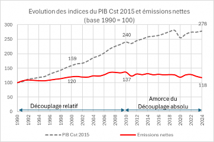
Figure 1: Evolution of GDP indices at constant 2015 prices and net emissions of Tunisia from 1990 to
2024
Between 1990 and 2010, greenhouse gas emissions increased at a slower rate than economic growth.
of GDP, which has led to a relative decoupling between economic growth and emissions growth
GES, which demonstrates real progress in the decarbonization of the Tunisian economy and a gradual alignment of objectives
NDC climate measures on the path to carbon neutrality by 2050.
The period 2010-2024 was marked by the emergence of a new trend: greenhouse gas emissions were
relatively stable, in a context of moderate economic growth. This new trend
This is largely explained by the efforts made in the energy sector (efficiency policy).
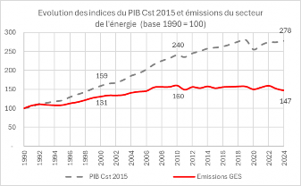
Figure 2: Evolution of GDP indices at constant 2015 prices and GHG emissions from the energy sector
1990 to 2024
energy) and structural changes gradually implemented in the Tunisian economy (orientation
towards high value-added non-energy sectors).
In the area of climate change adaptation, Tunisia has been hit hard by the
consequences of the increased frequency and intensity of extreme phenomena linked to
climate change.
Heat waves, droughts, floods and heat waves are increasingly affecting the
water resources, food security, ecosystems, infrastructure, agriculture, the
coastline, fishing, territories and cities.
The general population census carried out by the National Institute of Statistics (INS) in 2024,
reveals the portrait of a Tunisia undergoing profound demographic and social transformation since the last
2014 census. The results highlight the need to reorient public policies
in the areas of housing, employment, youth, living conditions, social equity, and digital development.
Compared to the 2014 census, several statistical indicators highlight the imperative of
to meet new major challenges related to social progress, economic growth and the protection of
the environment over the next decade. The main indicators of the new census of the
The population figures for the year 2024 can be summarized as follows:
-
The population reached 11.97 million inhabitants, representing an annual growth rate of 0.87%.
compared to 2014;
-
The number of households registered an annual increase of 75,900 families to reach a
a total of 3.47 million families;
The average household size has continued to decline, now standing at 3.45 members;
-
A near-universal connection to the electricity grid with an electrification rate of 99.8% of the
Total Tunisian population.
The 2026-2030 development plan comes in an international context marked by conflicts
geopolitics, profound changes and a climate emergency.
This plan is based on a bottom-up and decentralized approach. The involvement of the 279 delegations, of the 24
The governorates and the 5 districts made it possible to identify the needs at the regional level and to set the
national priorities. Over the next five years, the strategic directions of the plan
Socio-economic development revolves around reconciling economic growth and
social justice.
The main areas of development are particularly focused on:
-
Strengthening social equity with particular attention to low-income social groups
income ;
Reducing unemployment;
Encouraging regional development;
-
The introduction of reforms in the health, transport, and education sectors;
Accelerating investments in the use of renewable energies;
Digital transformation
The reference year for NDC 3.0 is 2010, the same year used in the initial NDC.
(submitted in 2015) and the updated NDC (submitted in 2021).
In 2024, Tunisia conducted a national survey on wood energy consumption, which covered the
twenty-four governorates. Therefore, GHG emissions for the reference year 2010 were
recalculated taking into account the results of this survey. The updated inventory shows that the
Net emissions reached 34.964 MtCO2 in 2010, approximately 1.5 MtCO2 less than the inventory
initial. Gross emissions for 2010 amounted to 48.479 MtCO2, compared to 49.944 MtCO2
for the initial inventory.
The structure of emissions for the reference year 2010 by sector and by GHG is presented by the
The following graphs:
The greenhouse gas (GHG) emission levels for the reference year 2010 were updated using two sources:
-
The national inventory of GHG emissions, established as part of the first biennial report on the
transparency (NID 1) submitted on December 30, 2024;
The survey on wood energy consumption conducted in 2024.
The table below presents key information relating to Tunisia's objective in this regard
GHG mitigation, established within the framework of NDC 3.0:
Table 1: Key information relating to Tunisia's GHG mitigation target
Key Information |
Objective type |
The objective is expressed in terms of a percentage (%) decrease in
Carbon intensity compared to the reference year 2010.
|
Target year |
2035 |
Implementation Period |
2026-2035 |
Objective in 2035 |
Reduction of Tunisia's carbon intensity by 2035
62%
compared to that of the reference year 2010.
|
The graph below shows the trajectory followed by Tunisia to reach the objective of
a 62% reduction in carbon intensity by 2035 compared to the reference year 2010:
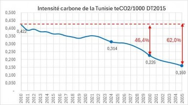
Figure 5: Evolution of Tunisia's carbon intensity from 2010 to 2035 according to the NDC scenario
3.0
By 2030, the trajectory shows a decrease in carbon intensity of 46.4% compared to 2010.
compared to 45% in the updated NDC submitted in 2021 and 41% in the initial NDC submitted in 2015.
Tunisia's overall target for NDC 3.0 is broken down into conditional objectives and
unconditional fans, as shown in the following graph:
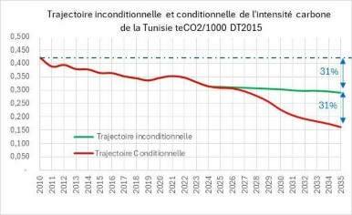
Figure 6: Evolution of carbon intensity in Tunisia from 2010 to 20235 according to the trajectories
conditional and unconditional terms of the CDN 3.0
-
The Unconditional objective, based on Tunisia's own efforts, aims for a reduction in
carbon intensity of 31% in 2035 compared to its level in the reference year 2010.
-
The conditional objective, contingent on international support, aims for an additional reduction in
carbon intensity of 31% in 2035 compared to its level in the reference year 2010.
In Tunisia's perception, the notion of conditionality stems from the principles set forth by the
UNFCCC and the Paris Agreement, and more specifically the fundamental principle of
“Common but Differentiated Responsibility”
.
Despite its small contribution to global GHG emissions, Tunisia is committed to the
contribution to achieving the mitigation objectives advocated by the Paris Agreement, by disconnecting
its GHG emissions from economic growth.
The objective of reducing the carbon intensity of its economy and the reduction in absolute terms of
GHG emissions reflect both the fairness and the ambitious nature of NDC 3.0 over the period
2026-2035.
Tunisia's NDC 3.0 is more ambitious than the previous NDC (updated NDC) for three reasons.
main reasons:
-
A 46.2% reduction in carbon intensity in 2030 compared to 2010, versus 45% in the
updated CDN;
-
An increase in the unconditional target which aims for a 28% reduction in carbon intensity in
2030 (compared to 27% in the previous CDN);
-
A first-ever absolute reduction in net GHG emissions of 34% by 2035
Compared to 2010, this decrease confirms Tunisia's commitment to strengthening its climate ambitions
and to achieve an absolute and lasting decoupling between economic growth and the evolution of
GHG emissions.
Thus, in 2035, per capita GHG emissions would reach 1.77 tonnes of CO2, compared to 2.55
teCO2 in 2010, representing an overall decrease of 31%.
Over the period 2010-2035, the trajectory of GHG emissions highlights three sub-periods,
as shown in the following graph:
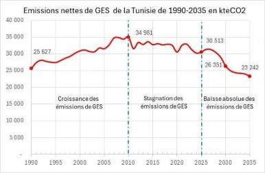
Figure 7: Evolution of net GHG emissions from Tunisia from 1990 to 2035, according to the scenario
of CDN 3.0
-
A first sub-period
1990-2010,
marked by
relative decoupling
between GDP and GHG emissions.
-
A second sub-period
2010-2025,
marked by
a start to absolute decoupling
between GDP and GHG emissions.
-
A third sub-period
2025-2035,
who will mark
Definitively the absolute decoupling between GDP and GHG emissions.
Geographical coverage: Entire national territory
-
National emissions coverage: 100% of emissions from the reference year and target years
-
Targeted sectors: All emission/absorption sectors recommended by the IPCC, namely:
-
Energy: All sub-sectors and all sources (combustion and fugitive emissions)
Waste (solid and liquid)
Industrial processes
AFAT (agriculture, forestry and land use)
-
Targeted gases:
CO2, CH4, N2O, SF6 and HFCs
Over the period 2026-2035, the implementation of NDC 3.0 in the area of mitigation requires the
mobilization of approximately 25 billion USD,
that is, 47% of the total needs of CDN 3.0
The table below shows the breakdown of mitigation funding needs by sector:
Table 2: Funding needs for the mitigation component of NDC 3.0, by sector
Sectors |
MUSD 2025 |
Energy |
21,665 |
Renewable energies |
11,221 |
Energy Efficiency |
5,903 |
Energy Transition Infrastructure |
4,541 |
Industrial Processes |
484 |
AFAT |
1,283 |
Waste |
1 502 |
Total |
24,934 |
Source: Estimate based on cost assessment of measures
Energy is by far the most important sector in terms of mobilizing funding.
necessary to achieve the NDC 3.0 objective in the area of mitigating emissions
GES, representing 87% of the investment needs of the mitigation component of NDC 3.0.
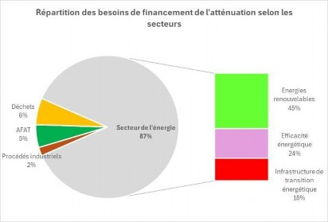
Figure 8: Distribution of funding needs for the mitigation component of NDC 3.0, according to the
sectors
In relation to the specific financing needs of the energy sector, renewable energies
represent 45%, energy efficiency 24% and infrastructure 18% (share of total need)
for mitigation, excluding capacity-building actions, technology transfer and
accompaniement).
In addition to these financial needs for investment, there is also the funding required for strengthening
capacity building, technology transfer, and support for mitigation programs,
valued at $1.25 billion over the period covered by NDC 3.0
.
The financing needs for CDN 3.0 investments are divided into two categories: effort
national, serving the unconditional objectives, and international support necessary to achieve the
Conditional targets. As the following table shows, the national effort would cover 26% of the need
total funding, compared to 74% for international support needs:
Table 3: Distribution of mitigation funding needs according to conditional objectives
and unconditional and according to sectors (MSUD)
|
Need for international support
(Conditional objectives)
|
National funding effort
(Unconditional Objectives)
|
Total funding requirement |
Energy |
16,550 |
5 115 |
21,665 |
Industrial Processes |
340 |
144 |
484 |
AFAT |
880 |
403 |
1,283 |
Waste |
720 |
782 |
1 502 |
Total |
18,490 |
6,444 |
24,934 |
% |
74% |
26% |
100% |
Source: Estimate based on cost assessment of measures divided into conditional and
unconditional
Tunisia is considering the use of carbon pricing instruments as economic levers.
majors to contribute to achieving the objectives of NDC 3.0 and the energy transition.
Under Article 6 of the Paris Agreement, approaches to international cooperation based on
These markets represent an opportunity to seize in order to increase climate finance and mobilize private and public investment, enabling the realization of the ambitious objectives of the NDC
-
The approach adopted is based on four main initiatives:
-
The official establishment of an entity responsible for the management and coordination of all the
process related to Article 6 of the Paris Agreement in Tunisia (National Authority)
Designated);
-
The development of international cooperation through Articles 6.2 and 6.4 of
the Paris Agreement to support "Low Carbon" projects, particularly in the areas of
renewable energies, energy efficiency, biomethanization, processes
industrial, waste management and the Agriculture, Forestry and
Land Allocation (AFAT);
-
Capacity building on tools and methodologies related to the implementation of
Article 6 in Tunisia;
-
Improving the transparency framework for quantifying GHG emissions and
taking into account the corresponding adjustments at the national inventory level
greenhouse gas emissions.
2.4.4.1 Capacity building needs
The preparation of the first RBT, the CBIT initiative and the development of the NDC 3.0 have made it possible to put
in place specific capacity-building programs for the benefit of stakeholders.
Several capacity-building programs have been put in place, aimed at ownership and
mastery of the methodologies and structuring tools related to the requirements of the Paris Agreement
(inventory, monitoring of progress on the NDC, implementation of the CTR, climate finance, etc.).
In order to strengthen skills on topics that promote increased transparency
and the acceleration of the implementation of NDC 3.0, the specific needs for strengthening the
capabilities should be structured particularly around the following axes:
-
National GHG emissions inventory: continuous improvement of the data collection process
quality data through specific sectoral surveys, archiving of results and
data management, strengthening of quality control and quality assurance, reporting
sectoral and national.
-
Enhanced transparency framework: operationalization of the CTR, appropriation of formats
Tabular reporting (CRT and CTF), mastery of the requirements of the modalities, procedures and lines
guidelines (MPGs), sectoral transparency systems, tools and methodologies for monitoring
financial support.
-
Access to climate finance: updating the climate taxonomy, governance of the
taxonomy, programming and monitoring of climate finance at the national and sectoral levels,
public, private and regional.
-
Article 6 of the Paris Agreement: Methodological aspects of market mechanisms (article)
6.2 and article 6.4), support for the entity responsible for carbon credits and the holders of
projects.
-
Strengthening the capacities of territories: a specific program must be put in place at
This program benefits the governorates and regional districts. It must cover all themes.
in relation to the role of territories in achieving climate policy objectives:
quantification of GHG emissions (inventories, carbon balances), long-term strategy of
combating climate change, climate action plan, regional framework
Enhanced transparency, climate finance, climate governance, local projects, Article 6 of
the Paris Agreement, etc.
2.4.4.2 Technology Transfer Needs
The CDN 3.0 aims to boost the Tunisian economy; technological advancements represent a key focus.
a major strategic step towards achieving the ambitious objectives of NDC 3.0 and the attainment of the
Carbon neutrality by 2050.
The massive investments planned for the next decade are particularly concentrated on
the use of clean energy technologies.
Four main technological levers should allow Tunisia to reduce its dependence
to fossil fuels and ensure the transition to sustainable and environmentally friendly energy sources
of the environment:
-
Energy savings: Strengthening energy efficiency policy is considered
as a priority to accelerate the energy transition. The use of low-energy technologies
Carbon emissions in the building, transport and industrial sectors offer Tunisia solutions
innovative solutions to reduce GHG emissions linked to the growth in energy demand.
-
Decarbonizing the electricity sector: In line with the 2035 energy strategy, the
Tunisia has launched an ambitious program aimed at developing solar energy and
Wind power accounts for at least 50% of the electricity mix by 2035. Technology transfer
related to renewable energy production provides Tunisia with an opportunity to seize
to meet the challenges related to reducing energy dependence and achieving the
Carbon neutrality by 2050.
-
Electrification of uses: Technologies for electrifying uses play a role
crucial in the decarbonization of the energy sector. The development of uses
electricity consumption in final consumption is contingent upon increased production
electricity from renewable energy sources. To meet the requirements of carbon neutrality
carbon, investments in energy technologies related to the electrification of
uses particularly concern the storage of electrical energy to reduce impacts
negatives of the intermittency of renewable energies, the development of electricity networks
smart and electrified transport
-
Sustainable infrastructure: Tunisia has embarked on an ambitious project for a
Submarine electrical connection with Italy by 2028. This project has a capacity of 600 MW,
aims to transform the Tunisian energy landscape by facilitating electricity exchange between
both shores of the Mediterranean. The completion of this project will contribute to security
energy, facilitating the integration of renewable energies into the electricity grid and
to meet the needs of carbon neutrality.
Furthermore, sustainable infrastructure incorporates the investments to be made in
the electrification of railway lines, the extension of the Rapid Rail Network lines
from Tunis (RFR), the extension and creation of tram lines in major cities, etc.
The development of the CDN 3.0 was marked by extensive consultation, extended to the various parties
stakeholders involved in the preparation and implementation of the policy to combat climate change
climate change. The consultations and discussions focused on three main targets:
-
The first target group is the ministries and agencies involved in climate strategies
sectoral and the implementation of the public policy for mitigating GHG emissions in
Tunisia. Several bilateral meetings were organized with key ministries and organizations,
including: the Ministry of Industry, Mines and Energy, the Ministry of Economy and Finance
planning, the Ministry of Agriculture and Water Resources, the Ministry of Business
social, etc.
-
The second target concerns the involvement of the twenty-four governorates covering the five districts
In Tunisia, several regional workshops were organized to exchange ideas with stakeholders.
regional policies and take into account the specific characteristics of the five regional districts in the policies
and climate measures envisaged in NDC 3.0.
-
The third target concerns the participation of young people from the five regional districts in the preparation
of Tunisia's NDC 3.0. The objective is to enable young people to participate in the work
developing the NDC 3.0 and proposing priority themes to be integrated into policies
and climate measures planned for the period 2026-2035.
2.6.1.1 General approach
In terms of mitigation, the approach adopted to set the climate objectives of NDC 3.0
is structured around the following steps:
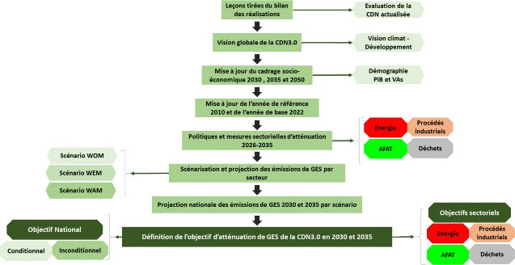
Figure 9: Methodological approach for setting the climate objectives of NDC 3.0
2.6.1.2 Methodology for calculating emissions
The calculation of GHG emissions complies with the 2006 IPCC guidelines.
The value of the global warming potential (GWP), used to express emissions and
GHG absorption in CO2 equivalent is in line with the guidelines of the fifth assessment report
According to the IPCC, the factors used are listed in the table below:
Table 4: Emission factors used in the NDC 3.0
|
|
CO2
|
CH4
|
N2O
|
SF6
|
HFCs |
|
|
|
|
|
Gas |
|
|
|
|
HFC-120 |
HFC-134a |
HFC-143a |
PRG (Integration period: 100 years) |
1 |
28 |
265 |
23,500 |
3,500 |
1,430 |
4,470 |
2.6.1.3 GHG Emission Mitigation Scenario
Three scenarios were taken into consideration in projecting GHG emissions from the sectors:
energy, industrial processes, waste and AFAT.
-
A WOM scenario (Scenario Without Measures): This scenario only incorporates policies and
measures (P&M) adopted before December 31, 2015, reflecting a BaU trajectory without the
benefits of mitigation measures implemented after this date. This scenario shows a
Emissions continue to grow, without the effects of post-2015 policies. The WOM
would correspond to the Business as Usual (BaU) scenario.
-
A WEM scenario (Scenario with Existing Measures): This scenario is an update of the
SNBC 1 Energy (2021) BaC scenario, based on an emissions reduction target of
factor 5 for a 2°C warming. Emissions figures include the effects of measures in
in force until 2022, resulting in a decrease compared to the WOM scenario. This scenario demonstrates
a slowdown in emissions thanks to the measures in place until 2022.
-
A WAM scenario (scenario with Additional Measures): This scenario updates the "zero" scenario
net emissions" (NEE) of the SNBC 2 Energy (2023), aligned with the 1.5°C target. It includes
the latest strategies and planned actions, aimed at achieving the ambitious objectives of
emission reductions for 2035 and beyond, such as the energy strategy to 2035.
WAM would correspond to the CDN3.0 scenario.
2.6.2.1 Energy Sector
The work on foresight regarding policies and mitigation measures has been the subject of strong
consultation with all stakeholders operating in the energy sector. The
The Ministry of Industry, Mines and Energy coordinated a working group
bringing together the main public bodies involved in the mitigation policy in the
energy sector (ETAP, STEG, ANME, STIR, ONEM, ITCEQ, INS). The WAM scenario being the scenario
The most ambitious in terms of mitigating GHG emissions, it was selected as representative
of the conditional objective of NDC 3.0. This scenario reflects the energy objectives and
the climate ambition of the 2035 energy strategy, adopted by the Tunisian government in
April 2023.
In line with the conclusions of the first climate assessment, the NDC 3.0 energy scenario aims
the acceleration of the energy transition and the achievement of carbon neutrality by 2050,
particularly through the strengthening of energy efficiency, the massive deployment of
renewable energies and the use of sustainable energy infrastructure.
The policies and mitigation measures considered in the energy sector have focused
essentially on:
-
Accelerating the renewable energy program for electricity production.
-
The development of social programs for renewable energy and energy efficiency
to combat energy poverty.
-
Strengthening energy efficiency program contracts, particularly in the sectors of
industry and construction.
-
The consolidation of the cogeneration program in the industrial and service sectors.
Promoting electric mobility.
The implementation of urban transport plans in major cities.
-
Promoting car-sharing in transportation, teleworking & digitalization of
administrative services to reduce the demand for travel.
-
Strengthening the energy transition infrastructure, particularly in the sector
electric.
-
Strengthening the role of the Energy Transition Fund (FTE) as an essential instrument of
support for the energy transition policy.
Greenhouse gas emissions from the energy sector are expected to increase from 30.7 MtCO2 in 2010 to
22.6 MtCO2 in 2035, representing a significant decrease of approximately 26%.
The breakdown of greenhouse gas emissions from the energy sector by source highlights a
substantial reduction in fugitive emissions, which would represent only 5% of emissions
totals of the energy sector in 2035.
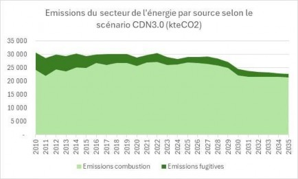
Figure 10: GHG emissions from the energy sector, according to the NDC 3.0 scenario
Regarding emissions from combustion, the decrease in absolute terms, on the
The period 2026-2035 is the result of mobilizing four main levers:
-
Strengthening energy efficiency policy to control the evolution of
Energy demand. Primary energy intensity is expected to decline annually.
an average of 3.5% between 2026 and 2035; the Tunisian economy is expected to consume more than three times
less energy in 2035 compared to the current level.
-
The emergence of energy sobriety as a lever for behavioral change
in the various sectors of final energy consumption.
-
The massive deployment of renewable energy use to diversify the energy mix
energy and decarbonize electricity production. By 2035, the share of energy
Renewables should reach at least 50% of the electricity mix and consequently reduce
drastically reduce GHG emissions due to the use of natural gas in generation
of electricity.
-
Strengthening the electrification of uses in different consumer sectors
In terms of final energy consumption, electricity is expected to account for nearly 33%.
final in 2035, compared to 22% in 2022.
2.6.2.2 Industrial Processes Sector
In the industrial process sector, mitigation actions have been planned as follows:
-
Cement sector: The mitigation action, consisting of reducing the clinker/cement ratio,
will be prepared (characterization of the composite cements to be marketed, regulatory aspects,
control systems, etc.) by 2030 and its operationalization will be planned from
2031, bringing the clinker/cement ratio to 0.839 in 2035.
-
Tunisian Chemical Group: Installation of the catalytic N2O destroyer within the framework of the
NACAG program, the project is scheduled to become operational in 2026.
-
Fluorinated gases (HFCs): Following Tunisia's ratification of the Kigali Amendment in March 2021,
The implementation of the national strategy for the gradual reduction of HFCs has already begun, with the
launch of an information system controlling imports, regulatory actions, and
capacity building and certification programs for technicians involved
in the refrigeration sector. The program will therefore be extended, in accordance with the recommendations.
of the Kigali Amendment.
Implementing all these actions would result in a cumulative reduction of 2.4 million tonnes of CO2.
emission reductions over the entire period 2026-2035.
The graph below illustrates the evolution of GHG emissions from the process sector
industrial companies in the CDN 3.0 scenario:

Figure 11: GHG emissions from the industrial process sector, according to the NDC scenario
3.0
Ultimately, the NDC 3.0 scenario in the process sector anticipates a level of emissions
greenhouse gas emissions of 7.8 MtCO2 in 2030 and 9.3 MtCO2 in 2035, representing an average increase of 2.2% per year
report to the BaU scenario over the period 2010-2035. According to the BaU scenario, emissions
would reach 9.7 MtCO2 in 2035, representing an annual growth of 3.7%.
-
AFAT Sector
In CDN3.0, the actions of the updated 2021 CDN were adjusted in light of the advances
implemented over the period 2026-2035. The main measures are as follows:
-
Integrated programs comprising multiple actions for the restoration of agricultural landscapes,
degraded forests and pastures, and leading to an increase in absorption (by the
biomass and soils). These programs should be accelerated to cover 487,000
hectares by 2030, and a total of 855,000 hectares by 2035.
-
Organic agriculture: Continuation of the same development program as in the updated NDC
by 2030, and a slight increase beyond 2030.
-
Intensification of efforts to combat forest fires in order to limit them
forest areas allocated to an average of 3,000 hectares per year by 2030, and continuation of
efforts to cap them at 1000 hectares per year beyond 2030.
-
Intensification of efforts to optimize the use of synthetic mineral fertilizers.
-
A comprehensive program for reducing agricultural waste, in all its forms, within the
management of agricultural production, crop storage, and their transport, but also and
especially in terms of food consumption.
Valorization of poultry manure (composting and energy).
Increased use of olive mill wastewater as a soil amendment in agricultural soils;
-
Animal feed improvement program aimed at reducing enteric emissions
resulting from livestock farming activity.
Implementing all of these actions would allow us to accumulate over the period 2026-2035
approximately 22 million tonnes of CO2 between emission reductions (7.5 million tonnes of CO2) and increases in
absorptions (14.2 MteCO2).
Based on this, the graph below shows the trajectory of net emissions from the sector of
AFAT according to the NDC 3.0 scenario.
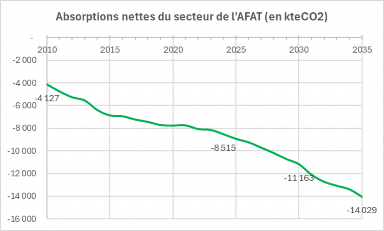
Figure 12: Net emissions from the AFAT sector, according to the NDC 3.0 scenario
Ultimately, the scenario of the CDN 3.0 in the AFAT sector would result in a multiplication
by a factor greater than 3 of the net absorption balance between 2010 and 2035, i.e. an improvement
absorptions of approximately 4 MteCO2 in 2035 compared to the BaU scenario.
2.6.2.4 Waste Sector
The waste sector is composed of solid waste and liquid waste.
For solid waste, the main actions to be taken within the framework of NDC3.0
essentially consist of:
-
Reduce the amount of household and similar waste produced (kg/person/day) by 10% in 2035, by
compared to 2020;
Achieve a material recycling rate of 20% by 2035 in urban areas;
-
Achieve an organic (compost) and/or energy (RDF and power) recovery rate of 40% in
2035;
-
Reduce landfilling by 60% by 2035, through the mechanical-biological treatment of
waste (TMB) and the production of RDF upstream of controlled landfills;
Systematize degassing at controlled landfills from 2026 onwards;
-
Generalize the use of "biogas-to-power" in landfills equipped with systems
degassing (GHG impacts credited in the energy sector);
-
Energy recovery from olive mill wastewater (GHG impacts credited in the energy sector) and
whose GHG impacts are credited to the energy sector.
For the sanitation sector, the conditional objectives of the updated NDC for
The plans for 2030 are all maintained, and will therefore include the following main actions:
-
Improvement of the wastewater treatment rate to 70% by 2030 and 75% by
2035;
-
Improvement of the management of wastewater treatment plants (WWTPs) (urban and rural), in particular
through the rehabilitation of several of them, aiming for a 15% reduction in emissions per
ratio to BaU in 2030, and 38% in 2035;
-
Improved industrial connection and reduced COD (aerobic treatment and optimization)
management), aiming for a 25% reduction in emissions compared to BaU by 2030, and 50% by
2035;
-
Valorization of sludge (in agricultural settings and potentially in cement plants), aiming at a
a 50% reduction in emissions from sludge storage compared to BaU by 2030, and 70%
in 2035;
-
Improving energy efficiency by focusing on the most technological solutions
ambitious goals, particularly regarding the development of cogeneration and the maximization of
the use of photovoltaics in meeting the electricity demand of ONAS (impacts)
GHGs credited in the energy sector).
Implementing all the actions across the entire waste sector would allow for
accumulate 5.4 million tonnes of CO2 in emission reductions over the entire period 2026-2035.
Figure 13: GHG emissions from the waste sector, according to the NDC 3.0 scenario
Ultimately, the NDC scenario in the waste sector projects an emissions level of
GHG emissions of 5.1 MtCO2 in 2030 and 5.3 MtCO2 in 2035, representing an average increase of 2.2% compared to
at BaU per year over the period 2010-2035, whereas it would have reached 6.3 MteCO2 according to the scenario
trend (BaU).
In absolute terms, based on the compilation of sectoral work, the graph below shows
the trajectory of CDN 3.0 emissions:
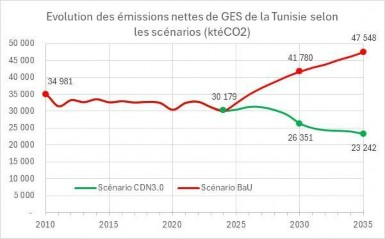
Figure 14: Evolution of net GHG emissions from Tunisia from 2010 to 2035, according to the scenarios
BaU and CDN 3.0
Net emissions would increase from approximately 35 MteCO2 in 2010 to 47.5 MteCO2 in 2035 according to the BaU scenario
and 23.2 MteCO2 according to the CDN3.0 scenario (conditional and unconditional).
The analysis of barriers to the implementation of the various mitigation options required to achieve
The objectives set allowed the overall objective to be divided into two distinct targets: conditional
and unconditional, as shown in the following graph:
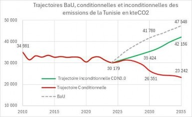
Figure 15: Evolution of net GHG emissions from Tunisia from 2010 to 2035, according to the scenarios
BaU, conditional and unconditional
The following table presents the overall rate of change in emissions in 2030 and 2035 compared to
those of 2010, according to the trajectories.
Table 5: Rate of change in GHG emissions according to trajectories
Scenario |
2030 |
2035 |
BaU Scenario |
+19% |
+36% |
Unconditional Trajectory |
+1 % |
+21% |
Conditional Trajectory |
-25% |
-34% |
The cumulative avoided GHG emissions over the period 2026-2035 would be approximately 150 MteCO2, distributed
between the sectors as follows:
The energy sector would account for the largest share, representing 80% of total emissions
avoided.
Achieving the conditional target will result in a cumulative reduction of 64% in GHG emissions.
total avoided cumulative emissions over the period 2026-2035, while the unconditional target
will allow a 36% reduction.
In addition to reducing GHG emissions, the implementation of mitigation targets will have positive impacts
significant in terms of sustainable development, which could be summarized as follows:
-
The savings in fossil fuels, achieved through the energy transition program implemented in the
within the framework of NDC 3.0, would amount to approximately 47 Mtoe over the period 2026-2035, of which approximately 21 Mtoe would come from
energy efficiency and 26 Mtoe from renewable energies (substitution of energies
fossils).
-
A significant reduction in the country's energy bill, which would reach, at average international prices
energy imports in 2024, approximately USD 30.2 billion over the period 2026-2035, of which 15.6
billions of USD attributable to renewable energy and 14.6 billion USD to efficiency
energy.
-
Savings on primary energy consumption would translate into gains on public subsidies
to energy products, such as electricity, diesel, domestic LPG, etc. Subject to the conditions of
energy product subsidies from 2024, the cumulative gains linked to public subsidies on the
The period 2026-2035 would amount to USD 16.8 billion, of which approximately USD 10 billion would come from
of the renewable energy program and $6.8 billion USD for energy efficiency.
-
In the AFAT sector, mitigation programs would have multiple beneficial economic consequences.
due, firstly, to the repositioning of rural areas at the heart of the country's development, by reintroducing
significant additional resources supporting the CDN 3.0 scenario. Furthermore, the practices of
organic farming, optimized use of chemical fertilizers, quality improvement
Manure and organic valorization of animal waste will allow for a reduction in environmental pollution.
agriculture (soil and water), and therefore the preservation of this vital capital.
-
In the waste sector (solid waste and sanitation), recovery programs will allow
The optimization of the use of national resources. They will also lead to better preservation
soils, water resources, and public health through better solid waste management and
liquids. Mitigation programs in the sanitation sector will also allow for a
Optimizing the use of water resources through the reuse of treated wastewater.
On the social front, the implementation of the energy component of the NDC 3.0 should enable the creation of...
minus 27,000 direct permanent job equivalents. In addition, there will be the creation of job-generating activities.
in all other sectors (AFAT, waste and industrial processes).
Furthermore, the energy transition program helps to reduce energy poverty among the most vulnerable households.
vulnerable, particularly through energy efficiency programs aimed at this category of households,
such as the Prosol Elec economic and Prosol Elec social programs for PV equipment for low-income households and
the PromoLED distribution of LED lamps for the benefit of this category of households, etc.
Furthermore, programs aimed at restoring ecosystems and soils, and improving yields
related activities (food production, improvement of the feed balance for animal feed)
livestock, etc.) will contribute directly to the objectives of other conventions (biodiversity, desertification). They
will primarily lead to an increase in the income of the rural population, resulting in a fairer distribution and
a more equitable distribution of the fruits of growth to all rural categories (women, youth, professions)
disadvantaged), and therefore a stabilization of populations in rural areas.
In 2025, INM1 carried out climate modeling, according to the SSP2-4.5 and SSP5-8.5 models for the horizons
2050 and 2100 based on a historical period of 1991-2020. These climate projections show a strong
rising temperatures and a significant decrease in rainfall compared to the average, such as
The following table shows this:
Table 6: Variation in temperature and precipitation in 2050 and 2100 according to SSP5-8.5 scenarios
and SSP2-4.5
|
|
Scenario SSP2-4.5 |
SSP5-8.5 scenario |
|
|
2050 |
2100 |
2050 |
2100 |
|
Temperature increase
average
|
1.6°C |
2.5°C |
2.2°C |
5.0°C |
Decrease in average rainfall |
9.3% |
14.3% |
12% |
26% |
Source: INM, 2024
Given these changes in climatic parameters, the most vulnerable areas of Tunisia
These include, in particular, water resources, agriculture and food security, health, and biodiversity.
and ecosystems, the coastline and coastal developments, tourism and land-use planning.
If Tunisia does not urgently address the risks associated with climate change, according to the Bank
Globally, the economy could contract by 3.4% in terms of GDP by 2030 (nearly 5.6 billion Tunisian dinars,
(or USD 1.8 billion per year in net present value). Annual losses due to water shortages, at
Coastal erosion and flooding would reach 6.4% of GDP in 2050, or 10.4 billion Tunisian dinars (3.4
billion USD) in net present value2.
As a result, the agricultural sector would be particularly affected, with its added value expected to decrease by 15%.
% by 2030 (and 29% by 2050). A decline in agricultural production would reduce exports
net, while imports would increase to fill the gap between supply and demand. In
As a result, the current account deficit would worsen by more than 6% in 2030. This would exacerbate
Tunisia's already fragile external balance. Furthermore, by 2030, the poverty rate is projected to increase to
21.3%, this equates to a 1.5 percentage point increase compared to the baseline scenario.
The following table presents a summary of the main risks associated with climate change for the
different key areas of climate vulnerability in Tunisia.
Table 7: Climate impacts and risks according to key areas in Tunisia
Domains |
Climate Impacts and Risks |
|
Water Resources
|
-
Reduction of conventional water resources ranging from 20% to 38% by 2050, depending on the scenarios
40% decrease in groundwater -
Groundwater volume decreased by 32% in the North of the country, which accounted for 62% of the total volume in 2020.
Increased water demand and conflicts over water use. -
Overexploitation of groundwater and decline in water stocks and mobilization capacities
affected.
Degradation of water quality and salinization of coastal aquifers.
|
|
Agriculture and food security
|
-
A drop of approximately one-third in national cereal production, particularly affecting wheat
tender, barley and durum wheat.
Olive oil production is expected to decrease by 11% to 60% depending on the scenarios and timeframes. -
Production of pastoral red meat is expected to decline by 21% to 40%, depending on the scenarios and timeframes.
-
Significant decline in products from artisanal coastal fishing, and specifically fishing with
Charfia and the harvesting of clams on foot due to the rise in sea level.
|
|
Health and health services
|
-
Proliferation of waterborne diseases due to the degradation of water resource quality
drinking water and its scarcity, particularly for poor populations in rural areas
-
Increased incidence of respiratory illnesses, heart attacks, and strokes due to
the increase in heat waves, urban heat islands and the increase in atmospheric CO2 levels
Increased malnutrition linked to decreased agricultural production due to the increased frequency and severity of droughts and floods.
|
Table 8: Impacts and risks according to key areas in Tunisia (Continued)
Domains |
Climate Impacts and Risks |
|
Biodiversity and ecosystems
|
-
Tunisia has a total of 69 natural ecosystem units and 12 agro-ecosystem units, which will be
affected differently depending on their location by the reduction in rainfall and
the intensification of extreme episodes of drought and heat waves
Central and southern Tunisia will be particularly affected. -
Profound changes in forest ecosystems affecting the development and even the survival of
certain plant and animal species: growth, regeneration capacity, soil erosion,
Forest diversity, increased risks of uncontrolled fires, pest attacks, diseases, etc.3
-
Pronounced degradation of productive oasis ecosystems, following the scarcity of water resources,
the degradation of oasis soils and the proliferation of diseases affecting date palms and the canopy
oasis vegetation,
-
Risk of losing between 17 and 20% of the value of the cork oak forest in the Northwest, one of the
Tunisia's most biodiverse ecosystems
Low timber production of at least half in Aleppo pine forests. -
Degradation of coastal ecosystems and marine biodiversity due to rising sea levels
of the sea (ENM)
|
|
The coastline and coastal developments
|
-
Average sea level rise of 60 to 100 cm, depending on the coastline and climate scenarios
-
Risk of flooding of particularly vulnerable coastal lowlands and more than 3000 ha of
industrial, tourist and residential areas.
-
Potential agricultural losses are estimated at 14% of annual crops and 9% of irrigated crops, at
cause of the submersion of low-lying agricultural land
-
Threat of submersion of more than 23% of the surface area of the island zones (approximately 69,171 hectares)
total), including the islands of Kuriates, Kneiss and El Bibane.
Degradation of water quality and salinization of coastal aquifers.
|
|
Tourism
|
Disruption to beach tourism following the withdrawal of beaches due to the ENM -
Decrease in biodiversity and degradation of marine and terrestrial ecosystems and landscapes
Increased hotel operating costs (water and energy management) -
Conflicts over the use of natural resources and increased tensions over food supply
Increased frequency of severe heat waves and reduced tourist appeal of Tunisia
|
|
Land-use planning
|
-
Episodes of intense drought will accelerate the abandonment of rainfed lands by small
farmers, which would lead to a climate exodus towards large cities
-
Increased heat waves, air pollution and urban heat islands in major
cities
Damage to buildings and urban infrastructure following floods and extreme weather events
|
Given the "local" nature of the climate change adaptation issue, the
The adopted planning process combines both the territorial approach and planning at
at the national level. This will allow for better consideration of the specific characteristics of each region.
and their integration into sectoral development strategies and policies.
In order to facilitate the integration of climate change adaptation into planning
land-use planning at national and local levels, mapping of areas with "high"
"Climate risk," in relation to climate hazards, was developed, taking into consideration
the following risks:
Drought
Heat waves/heatwaves
Floods caused by runoff
Floods due to overflow
Sea Level Rise (SLR)
Forest fires.
Based on significant climate risks at the territorial level, chains of impacts
have been developed to highlight the potential effects of these risks on the sectors
Key economic factors at the regional level. Broad consultation with stakeholders in each
The region was then led to identify and prioritize the adaptation measures to be undertaken
to address the potential effects of climate risks deemed significant.
A series of bilateral meetings with key stakeholders at the central level took place.
The objective being to:
-
To raise the concerns of local stakeholders and present adaptation measures
priorities that have been identified at the territorial level.
Exchange information on planned strategies and programs and
-
Define adaptation targets at the national level.
Following these meetings, a rearrangement of the adaptation measures, resulting from the workshops
regional, as well as the various sectoral strategies and programs, was carried out according to
the thematic areas identified in the work and results of the objective process
Global Adaptation Initiative (GGA).
The planning process (territorial approach and sectoral approach at the national level) has enabled
to consolidate the results of consultations at the regional level with strategies and programmes
adaptation at the central level and rectification of certain references and targets based on implementation capabilities
implementation by the actors involved.
The results obtained were organized according to the seven (07) thematic areas in perfect harmony with
the Global Adaptation Goal (GAG) process:
-
For each area, a vision, strategic objectives and operational objectives are defined
;
-
The operational objectives are detailed by adding:
The operational objectives tables and the targets set for 2035 to achieve the objectives
The strategic plans for the seven thematic areas are presented in the appendix.
In order to ensure stable food security and adequate nutrition for all, Tunisia aims to
to make agricultural production, supply, storage and distribution of foodstuffs
food that is resilient to climate change.
Thus, two strategic objectives were defined.
STRATEGIC OBJECTIVE 1: To promote agriculture that is resilient to climate change,
remunerative and respectful of ecological balance.
The aim is to improve the adaptability of all agricultural practices (rainfed, irrigated, etc.).
mountain, peasant, organic, agroecological, etc.) as well as the fishing and
aquaculture.
The targeted improvements in resilience involve seeds, technology packages, and
production chains, fertilizer use, storage, processing and marketing.
STRATEGIC OBJECTIVE 2: Digitalization of the agricultural sector, regionalization of investments and
multiple forms of support for small and medium-sized farmers and workers
The aim is to promote so-called "smart" or "modern" agriculture, which would help to strengthen
the resilience of the agricultural sector. This objective will require strong involvement from stakeholders
from the field, and in particular from farmers, to digitize and organize the sector and its services,
its actors and even its financing.
Tunisia aims to significantly reduce climate-related water shortages and strengthen the
climate resilience of strategic sectors in the face of water-related risks in order to make
Climate-resilient water supply and sanitation and access to water
Drinking water that is safe and affordable for all. The following strategic objectives have been defined:
STRATEGIC OBJECTIVE 1: Ensure sustainable, inclusive and equitable access to water and sanitation
In order to ensure access to water for populations, systems, ecosystems and economies, the
Tunisia plans to develop and update approaches, methodologies, and tools that enable
to mobilize all remaining water resources, reduce losses and optimize the use of green water,
This will allow for better resource management and equitable sharing among the
various economic actors. It is also a matter of doubling efforts to best leverage the potential
national wastewater management, particularly through the renewal, extension and rehabilitation of
wastewater treatment plants (WWTPs).
STRATEGIC OBJECTIVE 2: Stabilize demand and improve supply through gradual and sustained use
to unconventional waters
To stabilize water demand from users and improve supply, Tunisia plans to change
an approach based on managing availability rather than demand, accompanied by a commitment
strong to improve the effectiveness and efficiency of the current system. Thus, the change in techniques
agricultural practices, the rehabilitation of distribution systems, and the use of technological innovations,
the expansion of the desalination plant network and the improvement of wastewater quality
The solutions addressed are outlined in this CDN and will need to be implemented quickly and efficiently.
in a coordinated manner.
Climate change creates health risks that require vigilance, mobility, and efficiency.
in the response. Indeed, rising temperatures, exposure to extreme events, the
vector-borne diseases, difficulties in accessing natural resources and degradation
Their quality, and other factors, are all phenomena that affect populations differently and
in particular, the most vulnerable people: the elderly, individuals suffering from illnesses
chronic conditions, pregnant women, people working outdoors, young children, populations
precarious people, homeless people.
Thus, to address this, Tunisia aims to promote health services that are resilient to the impacts of
climate change and to significantly reduce climate-related morbidity and mortality,
particularly in the most vulnerable communities.
With this in mind, Tunisia needs to strengthen service delivery at the regional and
local in order to improve emergency response capacity and ensure the population a
Minimum service, guaranteed and provided in a timely manner.
This area has a single strategic objective:
STRATEGIC OBJECTIVE 1: The health risks linked to climate change are controlled and their
The healthcare system's coverage is effective and efficient.
The state of biodiversity, as well as that of the country's terrestrial and marine natural ecosystems,
is deteriorating more and more due to the effects of climate change. It has now become urgent to
to take action to improve their resilience and help them cope with climate risks. For
To achieve this, the following strategic objectives were established.
STRATEGIC OBJECTIVE 1: The impacts of climate change on natural ecosystems are
controlled and a transformational policy that strengthens their resilience and maintains or even increases
the goods and services they provide is operated
The diversity and complementarity of natural ecosystems in Tunisia offer multiple benefits.
to sectors, actors and societies and constitute a valuable refuge for our native biodiversity
and endemic, which requires their protection against the multiple anthropogenic and natural effects of which the
climate change. Thus, it is necessary to implement a transformational policy that strengthens
the resilience of ecosystems, controls its impacts and maintains, or even increases, goods and services
provided by these ecosystems.
STRATEGIC OBJECTIVE 2: The governance of natural resources is improved, their resilience to
Climate change is amplified and ecosystem goods and services are enhanced.
In Tunisia, natural spaces, parks and reserves are in a state of significant degradation
and improving their situations requires a willingness to change, which involves improvement.
of their governance (promulgation of founding texts, streamlining of procedures, autonomy)
financial, etc.) and their classification in accordance with international classifications such as RAMSAR,
MAB.
Infrastructure and human settlements are increasingly exposed to the effects of change
climate and it has become essential to strengthen their resilience in order to ensure continuity and
sustainability of essential services for the well-being of the population. To this end, the three objectives
The following strategies have been defined.
STRATEGIC OBJECTIVE 1: Strengthening the resilience of the coastline to the effects of changes
climates
This strategic objective aims to strengthen coastal protection and adapt infrastructure
critical and to preserve natural ecosystems, by combining physical, ecological and measures
scientific monitoring.
STRATEGIC OBJECTIVE 2: Strengthen Territorial Planning for improved resilience of areas
urban areas affected by climate change
Tunisian urban areas are exposed to flooding, drought, heat waves and
to other climate effects. This strategic objective aims to integrate climate risks into the
territorial and urban planning, to put in place prevention tools and to strengthen the
resilience of municipalities through climate plans and appropriate regulatory mechanisms.
STRATEGIC OBJECTIVE 3: Improve the built environment and basic facilities and strengthen the
living conditions of populations in the face of extreme weather
The vulnerability of buildings and basic facilities (health, education, essential services)
Facing climate hazards is a major challenge. This strategic objective aims to secure the
vulnerable infrastructures and to establish a normative framework for resilient construction for all
new constructions or renovations, in order to ensure the continuity of services and the protection of
populations.
Climate change is putting significant pressure on cultural heritage, both tangible and intangible.
than intangible. Indeed, tangible assets are exposed to increased risks related to phenomena
extreme events such as floods, fires, or other forms of degradation amplified by the
climate change, while intangible heritage, including knowledge and practices
traditional, is threatened by population displacements likely to disrupt the
intergenerational transmission of this essential knowledge for adaptation and resilience
communities.
To address this situation, Tunisia has set itself the following strategic objectives:
STRATEGIC OBJECTIVE 1: To promote an integrated territorial approach to rehabilitation, protection and
promoting tangible and intangible heritage in the regions
The aim is to strengthen the methods of conservation, restoration and enhancement of heritage.
Indeed, by mobilizing existing knowledge, know-how and infrastructure, this process can become
a lever for local and national economic development, while improving social resilience and
involving local populations in the preservation of tangible and intangible heritage.
STRATEGIC OBJECTIVE 2: To preserve and safeguard heritage practices and activities and/or
ancestral
The goal is to enable as many people as possible to earn a decent living from their work by producing
healthy, high-quality food, without jeopardizing tomorrow's natural resources
(energy savings, system autonomy, domestic biodiversity). Specifically, this objective aims to
protecting traditional know-how and practices (fishing, agriculture, crafts) in the face of
impacts of climate change, by combining training, equipment and appropriate ecological solutions
to the territories.
STRATEGIC OBJECTIVE 3: Citizen involvement (women, youth, etc.) in innovation and
economic, social and cultural development of heritage in the regions
This objective aims to mobilize citizens, particularly women and young people, to promote the
tangible and intangible heritage through cultural innovation and the creation of economic activities
local and territorial cultural animation, while taking into account climate change and
their impacts.
The measures proposed in this area aim to promote social inclusion and mitigate the impacts
climate change has an impact on wealth distribution. It is therefore imperative to strengthen
the livelihoods of vulnerable groups, particularly women, seniors and young people, in
promoting, at the regional level, economic development that is resilient to climate change.
STRATEGIC OBJECTIVE 1: To promote climate-resilient, low-carbon regional development
carbon-based, which provides productive and decent work for all.
The new challenge for regional development in Tunisia is to rethink regional development.
fair, inclusive and sustainable which helps to integrate all populations, generations, categories
social and territorial factors. In this context, it is essential to support the regions so that they
can fully exploit their local economic development potential and make the most of it
profit. Each territory possesses a specific wealth, whether natural or cultural, that it
It is important to value this. In this way, rural areas can rely on their ecological resources, their
biodiversity and their agricultural landscapes, while urban areas have the opportunity to put in
value their cultural and historical heritage.
STRATEGIC OBJECTIVE 2: Diversify regional economies and employment opportunities, promote
social inclusion, strengthening the position of women and vulnerable groups
Tunisia needs to accelerate its progress towards inclusive development that puts women first
plan. Its aim is to strengthen women's participation in the regional and national economies and
preparing territories to meet the challenges of sustainable resilience.
The capacity-building needs in the adaptation component were considered through the
complementary areas of the GGA and cross-cutting areas identified in consultation with stakeholders
concerned at the territorial and central levels:
The complementary areas were defined in accordance with the Global Goal initiative.
Adaptation. They incorporate actions to support the implementation of related operational objectives
across seven thematic areas. In these areas, Tunisia aims for significant achievements, in
in terms of climate risk modelling and assessment, and anticipation of extreme events,
taking these extremes into account in development planning, integrating changes
climatic conditions in certain academic, vocational training and outreach programs.
This also involves intensifying activities in areas such as studying the impacts of
climate change on vulnerable sectors, the development of technologies and practices
climate-resilient solutions, exploring nature-based options, and assessing effectiveness
adaptation strategies and co-benefits to climate change.
Furthermore, the technical sectors involved in the adaptation stand to gain significantly in terms of
reporting and transparency if they develop and implement their sectoral systems quickly
Monitoring, Evaluation, and Learning (MEL). The benefit is even greater if
These sectoral MELs feed into a National MEL which would help national bodies to monitor the
progress in implementing NDC3.0 and assess Tunisia's contribution to achieving the objective
global adaptation.
The vision sought through these complementary areas is that
"Tunisia will provide the actors involved in the implementation of the NDC with the conditions and resources
and the skills needed to fulfill their planning commitments,
implementation, monitoring, evaluation and reporting
The operational objectives and their targets for 2035 for the four complementary areas,
are presented in the appendix to this document.
The proposal for cross-cutting areas is a national initiative resulting from consultations at the level
territorial and central as well as with specific groups, particularly young people.
Some of the strategic and operational objectives they contain fall under both of
adaptation, but also cross-cutting aspects related to mitigation. These areas cover four
Important aspects:
Scientific research and innovation
Capacity building and transfer of acquired knowledge and skills
-
Involvement of youth and leadership groups in the implementation of NDC3.0, improvement of the
resilience of families, women, children and seniors and control of migration flows
Governance, synergies, climate diplomacy and political support
Tunisia's vision across these cross-cutting areas is to support and assist the structures
and national actors to produce, transmit and exploit research results, and to promote
the entrepreneurial and innovative capacities of young people, channeling the efforts of the private sector and
working towards a non-profit approach to combat climate change and promote synergies
intersectoral.
The operational objectives and their targets for 2035 for the four cross-cutting areas,
are presented in the appendix to this document.
The funding needs for the adaptation component were assessed based primarily on the
estimated costs within the framework of existing sectoral studies and strategies, including, in particular, the water strategy
2050, the Tunisian coastal adaptation strategy and the national biodiversity strategy. The evaluation has
was also based on estimates made from the measures recommended within the framework of the strategy
National Low-Carbon and Climate-Resilient Strategy (SNBC-RCC). Adjustments and updates to
Its costs were calculated by experts and working groups to account for differences in the
temporality of the estimates made in these different documents.
Thus, the funding requirements, assessed in line with operational objectives, would amount to approximately
$29 billion USD over the period 2026-2035, allocated by sector as shown in the table
following :
Table 9: Funding needs by area of adaptation
Thematic areas |
MUSD |
Water Supply and Sanitation4 |
10,697 |
Agriculture and food5 |
8,043 |
Health and Health Services 6 |
30 |
Ecosystems and Biodiversity7 |
6,401 |
Infrastructure and Human Settlements8 |
1,730 |
Poverty reduction and protection of vulnerable groups9 |
238 |
Cultural Heritage and Knowledge10 |
16 |
Complementary and cross-cutting areas11 |
1,850 |
Total |
29,004 |
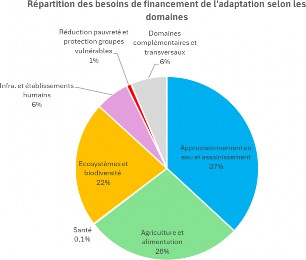
The largest share of funding needs falls to the water sector, followed by agriculture.
and food.
Figure 18: Distribution of adaptation funding needs by sector
The funding needs of complementary and cross-cutting areas are considered as funding
essentially serving to cover capacity-building measures, technology transfer, and
communication, popularization and facilitation of the implementation of adaptation programs.
4 Cross-cutting issues of the CDN 3.0
The importance of climate challenges and issues in Tunisia will require regular review and improvement
of the climate governance framework, at the national, regional and local levels.
The revision of the national governance system must, in particular, allow for greater efficiency.
and transparency in the implementation of national climate policies.
It will need to ensure greater efficiency in the various main functions of the system.
governance, including primarily:
Political leadership and the decision-making process,
-
Technical coordination and harmonization of actions across all sectors and stakeholders
key aspects of climate change,
-
The relevance of implementing priority measures and climate policies, at the level
national, regional and local,
-
Effectiveness of support mechanisms for the implementation of climate policies, including
instruments and mechanisms for financing, technology development and strengthening
capacities of all actors, and sustainable mechanisms for integrating climate change
in the processes and instruments of development planning,
-
A long-term and sustainable system for collecting information (inventories, climate risks, flows)
financial, technological improvement and capacity-building actions), of
monitoring, evaluation and communication, ensuring the effectiveness of evaluation and transparency.
The implementation of this strengthened climate governance system will require the adoption of a framework
strengthened regulations, including a framework law on climate change, and legal
application guidelines that should target, among other things, the following actions, but are not limited to:
As part of establishing a framework for enhanced transparency, Tunisia has developed a
central transparency platform and a RISQ platform of the national inventory management system
greenhouse gas emissions. The central platform is structured around three main components of the
transparency system: national inventory of GHG emissions, monitoring of implementation progress
of the CDN and monitoring of financial support. The RISQ platform ensures the compilation of results
sectoral inventories based on sectoral methodological files.
A roadmap has been established to make improvements to the central platform of
transparency (including the integration of ETF reporting tools) and mobilizing the necessary human resources to
operationalizing the enhanced transparency framework.
For the "Adaptation" component, Tunisia has developed an information system to manage and monitor the state
development of programs and projects for adapting to the impacts of climate change. This
The system is composed of the following three main areas:
-
Cross-cutting areas: This section includes information relating to the governance framework,
Climate finance, capacity building, communication and awareness-raising, and
scientific research.
-
Priority sectors area: this concerns key vulnerability and adaptation information
on priority sectors, such as water resources, agriculture, biodiversity and
ecosystems, health, infrastructure, etc.
However, this information system could be improved by strengthening coordination between the
different actors and by defining, for each program and/or project, the baseline situation of
vulnerability, the chain of impacts of major climate risks addressed and indicators of
monitoring to assess the expected impacts.
The funding needs required for the implementation of NDC 3.0 over the period 2026-2035 are
estimated at US$55 billion. In order to promote access to climate finance, the
Tunisia has established a list of economic activities eligible for the Climate Taxonomy. This taxonomy
established in 2025, aims to encourage national and international investors to direct resources
financial and, more specifically, climate finance towards activities enabling
to achieve the objectives of NDC 3.0 regarding GHG emission mitigation and adaptation to
climate change.
To support the integration of climate change into the 2026-2030 development plan, two
New initiatives have been launched:
The implementation of NDC 3.0, with its two components of mitigation and adaptation, will require a
strengthening Tunisian capacities at both the institutional and skills levels.
particularly suitable for:
-
Strengthen human resources at the central level to ensure continuous monitoring of implementation progress
work of the CDN at sectoral and territorial levels.
-
Implementing an economic and budgetary planning approach that prioritizes
climate actions, which implies a formal climate taxonomy and a monitoring system for
climate-related investments and financing.
-
Set up a
Integrated National Financing Framework
(INFF) which allows for the planning of the financial needs of the CDN3.0 in an integrated manner with those of the
sustainable development. This framework should include four components: assessment and diagnosis, the
financing strategy, monitoring and review, governance and coordination
.
-
Strengthen intra-sectoral coordination by putting in place the necessary resources and tools
at the level of key sectors concerned by mitigation.
-
Establish specific governance at the regional level to promote involvement and
the commitment of local stakeholders in the implementation and monitoring of the CDN3.0.
-
Establish appropriate multi-level dialogue mechanisms to facilitate information exchange
between the central, sectoral and regional levels.
-
Strengthening the skills of regional actors and supporting territories to develop and implement
implementing low-carbon territorial strategies and climate resilience with a view to strengthening their
contribution to achieving the national objective of NDC3.0.
-
Raising awareness and strengthening the capacities of the private sector and financial institutions in order to better
to engage them for the benefit of CDN3.0.
-
Supporting the public sector to implement public incentive and support instruments in
with a view to developing portfolios of mature and bankable projects in line with the objectives of
the CDN3.0.
-
Engaging young people in the process of combating climate change by strengthening
their abilities, their involvement in decision-making and through their engagement in life
community and associative.
Compared to previous NDCs, the development of NDC 3.0 was particularly marked by a wide
consultation with stakeholders and through the programming of the integration of the social dimension
in policies and measures to combat climate change (mitigation and adaptation).
Tunisia has been at the forefront of youth involvement in policies to combat
Climate change. Young Tunisians are actively participating with the delegation
national in international talks and negotiations on changes
climate. As part of an inclusive and participatory approach, Tunisia adopted in 2025,
a national strategy aimed at engaging young people in climate action.
The process of developing the NDC 3.0 was marked by strong involvement from young people.
twenty-four governorates and five regional districts of Tunisia. The young people played a
key role in the formulation and proposal of decarbonization policies and measures and
resilience to climate change.
This consultation process allowed young people to recommend that consideration be given to
a set of priority levers and actions in the preparation and implementation of the NDC
3.0 in particular: climate justice, the creation of green jobs, development
climate entrepreneurship, access to climate information, training and education on
climate, biodiversity protection, food security, access to energy, access
water, the development of renewable energies and the protection of vulnerable populations.
The methodological approach of CDN 3.0 is based on a comprehensive long-term vision that reconciles the
combating climate change, promoting social progress and economic growth. The decision
taking into account social inequalities and the impacts on vulnerable populations is at
at the heart of the policies and measures proposed to ensure a transition to a resilient economy
and low carbon. The positive effects of this just climate transition should translate into
by :
-
A fair distribution of the positive impacts of decarbonizing the Tunisian economy by the
bias in support for low-income households (reduction of energy poverty, improvement)
living standards, job creation) and support for businesses (improvement of the
competitiveness);
-
Supporting the most vulnerable populations to cope with the negative impacts of
climate change (food security, migration, access to water, etc.);
-
The involvement of territories and local authorities in strategies and policies
combating climate change, including the contribution of regions to the implementation of
work of the CDN 3.0;
-
Taking the concept of gender into account at the various stages of implementation
the CDN 3.0;
-
The mobilization of adequate climate finance and the establishment of mechanisms for
Innovative financing to benefit the most vulnerable populations.
In its 2035 energy strategy, Tunisia considered the fight against poverty
Energy as a crucial lever in its energy transition policy. The roadmap
This strategy recommended a just energy transition in favor of social classes
the most disadvantaged. As such, the Prosol Elec Economique program is specifically dedicated to the
The ANME has implemented a program targeting populations with low electricity consumption (1200 to 1800 kWh).
with the support of international cooperation, to equip 65,000 households with solar panels
photovoltaic panels, in the first phase. Ultimately, this program is supported by the Transition Fund
Energy through investment subsidies and interest rate improvements
The credit aims to equip 1.5 million households, thus enabling them to access energy.
renewables, reducing their electricity bills and contributing to lowering
GHG emissions.
Households with lower electricity consumption (less than 1200 kWh/year) are targeted, meanwhile,
through the Prosol Elec Social Programme, in which the Energy Transition Fund subsidizes
the entire cost of the installations. This program began with a pilot phase of 10,000
households, before scaling it up in a later phase.
Climate change poses a major threat to the sustainable development of the
Tunisia, simultaneously affecting production systems, social balances and the
natural ecosystems. Beyond mitigation and adaptation policies, the country faces
irreversible losses and damages resulting from extreme weather events and
slow-evolving phenomena that exceed national risk management capacities.
The impacts of climate change generate direct economic losses, such as the
decline in agricultural production and destruction of infrastructure, but also damages
non-economic factors including loss of livelihoods, forced migration, and degradation of the
natural and cultural heritage and the worsening of social inequalities.
Losses and damages are amplified by structural vulnerabilities, including scarcity.
water chronicle, the dependence of many territories on rain-fed agricultural activities, the
demographic and economic concentration on the coast and budgetary constraints limiting
the state's rapid response capacity.
In its NDC 3.0, Tunisia recognizes the "Loss and Damage" pillar as a component
distinct and complementary to mitigation and adaptation, consistent with the Mechanism
Warsaw International and the Loss and Injury Fund established within the framework of the
UNFCCC. NDC 3.0 proposes a set of ambitious measures and actions to limit losses
and damages caused by climate change. National priorities revolve around strengthening
monitoring and evaluation systems, integration of climate risk into planning
development, deployment of innovative insurance and compensation mechanisms and the
strengthening institutional and local capacities.
In Tunisia, the concept of gender is considered a fundamental axis of public policy in the fight against
against climate change. The integration of the gender dimension into NDC 3.0 is based on the
promoting social equity and reducing gender inequalities in policies and measures
climate mitigation and resilience. In this regard, two initiatives have been launched:
-
The Ministry of the Environment launched in 2023, in collaboration with the Ministry of Women, the
family, childhood and the elderly, a national action plan on gender and climate change
(PAN-CC). This plan relies in particular on the involvement of women in the decision-making process of the
climate policy and reducing the vulnerability of rural women to climate change
climatic.
-
The Ministry of Finance published a strategic guidance note for budgeting in 2025.
Inclusive, gender-sensitive, and climate-responsive management. The objective is to promote management
public finances, based on consideration of social justice and resilience
of the Tunisian economy in the face of climate change.
5 Appendices
|
1. Quantifiable information on the reference point (including, where appropriate, a year
(reference)
|
a) Reference year |
2010 |
|
b) Quantifiable information on the benchmark indicators, their values in the
reference year(s), base year(s), reference period(s) or other starting point(s)
and, where applicable, in the target year
|
The reference indicator, expressed in tonnes of CO2/1000 dinars of GDP at constant 2015 prices, is
national carbon intensity, which is the ratio between net greenhouse gas emissions
greenhouse gas emissions (expressed in tonnes of CO2 equivalent) and GDP (expressed at constant 2015 prices).
For the reference year 2010, Tunisia's carbon intensity was 0.422 teCO2/1000 DT.
GDP
|
|
(c) For the strategies, plans and actions referred to in paragraph 6 of Article 4 of the Agreement
Paris, where policies and measures are considered as elements of determined contributions at the level
national when paragraph 1(b) above does not apply, the Parties shall provide
other relevant information
|
NA (Not applicable) |
|
d) Target relative to the reference indicator, expressed numerically, for example in
percentage or amount of discount.
|
Tunisia has set itself the goal of reducing its carbon intensity by 62% by 2035 compared to
to that of 2010.
By relying solely on its own resources, Tunisia could reduce its intensity
a 31% reduction in carbon emissions by 2035 compared to 2010 levels, representing half of the overall target
of mitigation that it hopes to achieve by the same deadline. The other half of the objective would be
achieved, if the necessary international support is received.
|
|
e) Information on the data sources used to quantify the reference point(s)
|
The calculation of carbon intensity for the reference year 2010 was based on the following data:
-
The national inventory of GHG emissions for the year 201012, updated following the results of
The 2024 survey on wood energy consumption in Tunisia
-
The value of GDP in 2010 at constant 2015 prices (provided by the National Institute of Statistics and the
Central Bank of Tunisia).
|
|
(f) Information on the circumstances under which the country party may update the
values of the reference indicators
|
As part of the development of its first BTR, Tunisia has updated the inventory of GHGs on the
period 1990-2022, according to the IPCC 2006 guidelines and using the GRPs of the 5th
IPCC report (AR5). This inventory was subsequently updated following the results of the survey.
on wood energy consumption in Tunisia
|
2. Implementation schedules and/or periods |
g) Implementation schedule and/or period |
2026-2035 |
|
h) Annual objective or
Multi-year?
|
A single target year: 2035 |
|
3.
Scope and fields of application
|
a) General description of the mitigation objective |
Tunisia's NDC 3.0 aims for a 62% reduction in its carbon intensity by 2035 compared to
that of 2010.
Tunisia's "unconditional" contribution corresponds to a reduction in carbon intensity
31% in 2035 compared to that of the reference year 2010.
The "conditional" contribution anticipates a further reduction in carbon intensity by 2035.
31% compared to the reference year
2010.
|
|
b) Sectors, gases, categories and reservoirs covered by the contribution determined at level
national, including, where appropriate, in accordance with the IPCC guidelines.
|
The CDN 3.0 covers the entire national territory. It reflects all emissions and
anthropogenic absorptions reported in the inventory chapter of the 1st Biennial Report on the
Transparency (BTR) of Tunisia.
It therefore includes:
of the IPCC, and more specifically those with GWP (CO2, CH4, N2O, HFCs, SF6).
|
c) Consideration of subparagraphs (c) and (d) of paragraph 31 of Decision 1/CP.211 |
Tunisia's NDC 3.0 includes all categories of anthropogenic emissions and absorption
covered by the IPCC2006 guidelines.
|
-
All emission and/or absorption sectors, as defined by the 2006 guidelines of the
IPCC: Energy, Industrial Processes and Product Use (IPPU), Agriculture, Forestry and
Other Land Uses (AFAT), and Waste (solid and sanitation).
-
Within each sector, all subcategories and emission sources, in accordance with the
IPCC 2006 guidelines.
-
All absorption sources covered by the AFAT sector (soils and biomass, depending on the activities)
land use) in accordance with the 2006 IPCC guidelines.
All greenhouse gases covered by the 2006 guidelines
|
d) Beneficial impacts in the area of mitigation resulting from adaptation measures and/or
economic diversification plans, including descriptions of projects, actions and
initiatives relating in particular to adaptation measures and/or plans
economic diversification
|
Several adaptation actions should complement and improve certain mitigation measures
the results, particularly in the AFAT sector and natural ecosystems. We can
including, for example:
productive spaces.
|
4. Planning process |
|
a) Information on the planning processes that the country party has undertaken to prepare its
NDC and, where applicable, on the country party's implementation plans, including:
|
|
i) National institutional arrangements, public participation and engagement with the
local communities and indigenous peoples, in a gender-sensitive manner
|
The CDN 3.0 was developed based on a broad consultation process with the various
key stakeholders involved in mitigation and adaptation, both at the central level
than at the territorial level (Districts). This two-way consultation process allows not
not only to involve stakeholders at all levels, but also to take into account the
concerns of the local population and the specific characteristics of each region. Among the parts
Among the stakeholders consulted, the following are cited:
|
-
Agriculture and food sector: Promoting tree varieties tolerant to
drought and salinity; monitoring and controlling soil health in irrigated areas;
to increase the resilience of oases, oasis ecosystems and tangible and intangible potential
to the effects of climate change; improve the management of pastoral areas and their
productivity; raising national ambitions for climate change neutrality
land at the service of agricultural development; promoting organic farming.
-
Ecosystems and biodiversity sector: Increase the annual supply of plants produced in the
nurseries; integrating climate risks into forest management planning;
combating sand encroachment through biological dune stabilization (SFN and native species);
promote native forest, semi-forest and tree species in the territories
favorable to the practice of agroforestry, fighting fires and the proliferation of
diseases in forests, rangelands and other
-
The ministries involved in the implementation of sectoral climate strategies in Tunisia,
both in the area of GHG mitigation and adaptation. This includes, in particular, the
Ministry of Industry, Mines and Energy, Ministry of Economy and
planning, from the Ministry of Equipment and Housing, from the Ministry of Agriculture, from
water resources and fisheries, the Ministry of Health, the Ministry of Tourism and
the crafts department, the Ministry of Social Affairs, and the Ministry of Women, Family, and Children
and seniors, etc.
-
Public bodies, such as STEG, ANME, ETAP, STIR, ONAS, ANGeD, APAL, the Bank
Genes, CRES, etc.
-
Regional actors in the twenty-four governorates covering the five districts of Tunisia, where
Several regional workshops were organized to take into account the specific characteristics of the
regions, in terms of GHG mitigation potential, climate risks and measures
adaptation.
-
Young climate professionals, who were chosen through a selection process based
on their level of commitment to climate action and their geographical distribution across the
five (05) regional districts of the country. Consultation workshops were held aimed at listening to
their concerns, enabling them to participate in the development of the NDC 3.0 and identifying their
needs to play an impactful role in the implementation of NDC 3.0 and the fight against
climate change more generally.
|
|
Furthermore, the development of the NDC 3.0 was based on sectoral strategies and
existing national strategies, such as the national low-carbon and resilient development strategy
to climate change, the national strategy for ecological transition, the National Plan
Adaptation Plan (NAP), the "Water 2050" strategy, the energy strategy for 2035, the
National biodiversity strategy aligned with Kunming Montreal, the national strategy of
disaster risk reduction, the marine erosion protection strategy, the plan
of actions on “Gender and climate change”, the national strategy for youth engagement
in climate action by 2035.
Finally, a particular effort was made to ensure consistency between the recommendations of
the CDN3.0 and the strategic orientations of the 2026-2030 development plan
|
-
Contextual questions
National circumstances
|
Geographic Profile
Tunisia is located in North Africa between Algeria to the west and Libya to the southeast. It covers 164,000 km² and has two coastlines, bordering the Mediterranean Sea to the north and east, with 1,298 km of shoreline.
Tunisia has a relatively varied topography, with a mountainous northern and western region, a flat eastern region, a desert southern region, and a significant coastline primarily facing east. The main mountain range, which crosses the country from southwest to north towards Cap Bon, is the Tunisian Dorsal, the easternmost part of the Atlas Mountains. Between the mountains lie fertile valleys and plains. The highest point in the country is Jebel Chambi. The Sahara Desert, located in the south, covers approximately 40% of the territory. |
Climate Profile
Due to its arid climate and its approximately 1300 km Mediterranean coastline, Tunisia is among the
Mediterranean countries most exposed to climate change, with a high risk of increased
temperature.
Projections of average annual temperatures according to the RCP 4.5 scenario, with policies
The IPCC's mitigation statistics show an increase of +1°C to +1.8°C in 2050 and +2°C to +3°C in 2100.
In the "no RCP8.5 mitigation policy" scenario, the increase could reach +4.1°C to +5.2°C.
the end of the century. Regional disparities are to be expected. The sea has a moderating effect on the
spatial distribution of temperatures resulting in a slower warming of the fringe
Tunisian coastline in relation to continental regions.
Projections for the RCP4.5 scenario also show a decrease in rainfall of -5% to -10% by 2050.
and from -5% to -20% by 2100. In the RCP8.5 scenario, precipitation could decrease from -18% to -27%.
in 2100. However, by 2050, a 5% increase in cumulative rainfall is projected.
Northeast of the country, in the province of Jendouba, regularly affected by floods.
National Economy
According to INS data, economic growth reached 2.6%, 0.4% and 1.4% respectively in 2022.
2023 and 2024.
Fighting poverty
According to UNICEF, the poverty rate increased from 15.2% to 18.4% between 2015 and 2023, affecting 1.95 million people.
of people. Over the period 2021-2023, the impact of inflation on poverty in Tunisia was
Significant. Indeed, the average annual inflation rate over this period was 7.8%, the highest
for three decades, and reached 9.3% in 2023. As a result, the poorest households, who
who spend more than 40% of their budget on food, have been disproportionately affected, with
a 21.2% increase in their cost of living. The growing consequences of climate change,
including five years of drought, have a negative impact and worsen the situation of working households
in the agricultural sector.
|
b.
Best practices and experience learned from developing the NDC
|
The consultation process was conducted at two complementary levels: "Bottom-up"
(territorial) and top-down (at the national level).
-
A particular effort to ensure consistency and leverage synergies between CDN 3.0 and the
development plan 2026-2030, the development process of which took place concurrently with that of
the CDN3.0.
-
Strong youth involvement through specific regional consultations in the regions.
This has highlighted the importance of considering a set of priority levers in
the implementation of NDC 3.0: climate justice, social protection, strengthening of
youth capacities to better respond to climate change, strengthening basic social services for
protecting young people from climate change (education, health, social protection, etc.), strengthening the
youth participation in decision-making processes on the CC, stimulating engagement
young people in community life in support of the climate
-
Alignment, as far as possible, with the Global Adaptation Goal (GAG) initiative in the
definition of adaptation objectives within the framework of NDC 3.0. This alignment was initially achieved
in defining the areas of adaptation, then in choosing the indicators, and finally, in
the adoption of quantified targets for 2035.
|
|
c.
Other contextual aspirations and priorities recognized during the accession to the Paris Agreement
|
NA
|
|
b) Specific information applicable to the Parties, including integration organisations
regional economic and their member states, who have reached an agreement to act jointly
under paragraph 2 of Article 4 of the Paris Agreement, including Parties that have
agreed to act jointly and the terms of the agreement, in accordance with paragraphs 16 to 18 of
Article 4 of the Paris Agreement
|
NA
|
|
c) How the development of the NDC was informed by the results of the global stocktake,
in accordance with paragraph 9 of Article 4 of the Paris Agreement
|
The results of the global inventory showed that GHG emissions under the currently submitted NDCs
at the UNFCCC, lead to a temperature increase trajectory of between 2.4°C and
2.6°C by the end of the century, well above the 1.5°C target. To stay on the topic of
To avoid a 1.5°C trajectory, efforts will need to be doubled to reduce global GHG emissions.
65% by 2035 compared to 2019.
In response to this observation, the Tunisian NDC 3.0 was designed to strengthen the ambition
national and to consolidate adaptation actions, particularly in the areas and sectors
more vulnerable. It also takes into account the recommendations of the Global Assessment relating to
Capacity building, mobilization of climate finance, and alignment with sustainable development priorities.
|
|
(d) Each Party having an NDC under Article 4 of the Paris Agreement which consists of
adaptation measures and/or economic diversification plans leading to co-benefits
mitigation measures in accordance with paragraph 7 of Article 4 of the Paris Agreement must submit
reliable information:
|
|
(i) How the economic and social consequences of the response measures were taken into account
counts in the development of the CDN.
|
NA
|
|
ii) Specific projects, measures and activities to be implemented to contribute to co-benefits
mitigation, including information on adaptation plans that also produce
mitigation co-benefits, which can cover key sectors, such as energy,
resources, water resources, coastal resources, human settlements and the
urban planning, agriculture and forestry; and economic diversification measures,
which may target sectors such as manufacturing and industry, energy and
mining, transport and communications, construction, tourism, real estate,
agriculture and fishing.
|
See illustrative measures in point 3) d
|
|
5.
Hypotheses and methodological approaches, including those concerning estimation and
accounting for anthropogenic greenhouse gas emissions and, where applicable, the
absorptions.
|
|
a) Assumptions and methodological approaches used to account for emissions and
anthropogenic absorptions of greenhouse gases corresponding to the contribution determined to
at national level, in accordance with paragraph 31 of Decision 1/CP.21 and the guidelines
accounting practices adopted by the CMA.
|
Accounting for anthropogenic greenhouse gas emissions and removals: in accordance
to the 2006 IPCC guidelines. The approach used by Tunisia in accounting
emissions/absorption is strictly in accordance with the accounting guidelines for CDNs
appearing in Annex II of Decision 4/CMA.1.
|
|
b) Assumptions and methodological approaches used to account for the implementation of
policies and measures or strategies in the contribution determined at the national level.
|
The emissions projected for the "Low Carbon" scenario by 2035 result from the implementation of
work of all policies and measures.
The same assumptions and approaches used for the GHG inventory are employed for the
accounting for the results of the implementation of policies/measures/strategies in the
CDN.
|
|
c) Information on how the country takes into account the methods and guidelines
existing under the Convention for accounting for anthropogenic emissions and absorptions,
in accordance with paragraph 14 of Article 4 of the Paris Agreement
|
Tunisia uses the 2006 IPCC guidelines for national gas inventories.
greenhouse.
In its accounting of anthropogenic emissions and absorptions corresponding to the NDC, the
Tunisia based its position on paragraph 14 of Article 4 of the Paris Agreement, which refers to
Article 13 of the same agreement, which emphasizes environmental integrity and transparency,
accuracy, completeness, comparability, consistency, and the avoidance of any duplication
counting.
|
|
d) IPCC methodologies and measurement parameters for estimating emissions and absorptions
anthropogenic greenhouse gases
|
Methodologies: IPCC Guidelines 2006.
Metrics: Global Warming Potential (GWP) values according to the 100-year standard used in
based on the document "IPCC Fifth Assessment Report-AR5 - Climate Change 2014":
CO2 = 1
CH4 = 28
N2O = 265
SF6 = 23500
HFC-125 = 3500
HFC-134a = 1430
HFC-143 a = 4470
|
|
e) Assumptions, methodologies and approaches specific to a sector, category or activity,
in accordance with the IPCC guidelines, as appropriate, including, where applicable:
|
|
i) Approach to dealing with emissions and absorptions induced by disturbances
natural areas on managed lands.
|
NA
|
|
ii) Approach followed to account for emissions and absorptions of wood products
harvested.
|
Emissions attributable to informally harvested wood products are extrapolated to the year
of reference and subsequent years based on historical survey data. The
absorptions are estimated based on the IPCC 2006 guidelines.
|
|
iii) Approach used to address the effects of class structure
of age in the forests.
|
Not taken into account |
|
f) Other assumptions and methodological approaches used to understand the contribution
determined at the national level and, where applicable, estimate emissions and absorptions
corresponding, in particular:
|
|
(i) The way in which the benchmark indicators, the benchmark level(s), including, in the case
Where applicable, the reference levels specific to a sector, category or activity, are
constructs, including, for example, the main parameters, assumptions, definitions, methods,
data sources and models used
|
The approaches to calculating GHG emissions are directly derived from the IPCC guidelines.
2006. The development of the baseline scenario was based on significant work by
Modeling developed for different sectors. Emissions calculations are based on the
forecasting of activity data.
The sectoral assumptions are described in section 3.6 of this NDC.
|
|
(ii) For Parties whose nationally determined contributions contain
elements other than greenhouse gases, information on assumptions and approaches
methodologies used in relation to these elements, as needed.
|
NA
|
|
iii) For climate forcing factors included in contributions determined at the level
national and not covered by the IPCC guidelines, information on how these
factors are estimated.
|
NA
NA
|
|
iv) Additional technical information, as needed
|
|
|
(v) The intention to use voluntary cooperation under Article 6 of the Paris Agreement,
if applicable
|
To finance its contribution, which is conditional upon obtaining international financial support, the
Tunisia intends to make full and voluntary use of the cooperative mechanisms provided for by
Article 6 of the Paris Agreement, that they are based on the market (paragraphs 2 and 4 of Article 6).
6) or that they are not based on the market (paragraph 8 of Article 6).
In general, Tunisia wishes to engage in these cooperative approaches across all sectors.
sources eligible for the mechanisms of the article
6 of the Paris Agreement
|
|
6. The way in which Tunisia considers its nationally determined contribution is
fair and ambitious given its national situation
|
|
a) How does the country party consider its NDC to be fair and ambitious in light of its
national situation
|
Tunisia considers its contribution to be fair and ambitious, for the main reasons
following:
-
Tunisia aims for a very significant improvement in its carbon performance, with a very
ambitious goal of reducing its carbon intensity: -62% in 2035 compared to 2010.
-
Tunisia is also increasing its ambition for 2030, aiming for a reduction in its carbon intensity by
46.4% compared to 2010 versus 45% under the previous CDN.
-
Tunisia is also increasing its unconditional target from 27% in the previous NDC to 31% in 2030.
CDN3.0 in 2035.
-
Tunisia reduces its greenhouse gas emissions in absolute terms for the first time, a decrease of 34% in
2035 compared to 2010
Per capita emissions in Tunisia would decrease to 1.77 tonnes of CO2 in 2035
|
b) Considerations on fairness |
Historically, the country has always been an insignificant emitter (barely 0.07% of emissions).
global in 2010). Furthermore, its carbon intensity is marked by a trajectory
declining since the 1990s, well before the UNFCCC came into force,
reflecting a resolutely low-carbon development model for over three decades.
Contributing to the global effort, Tunisia is committed to accelerating the low-carbon transition of its
economy, by significantly reducing its carbon intensity below that of 2010 (-62% in 2035 compared to 2010).
|
|
c) The way in which Tunisia has taken into account paragraph 3 of article 4 of the Paris Agreement.
|
The NDC 3.0 raises Tunisia's ambition to reduce carbon intensity by 62% by 2035.
By 2030, Tunisia has even raised its ambition to a 46.4% reduction in carbon intensity by 2030, compared to
45% targeted by the previous CDN (updated CDN).
This objective corresponds to the highest possible level of ambition for Tunisia, given
of the short period that still separates us from the target year (2035).
|
|
d) The way in which Tunisia has taken into account paragraph 4 of Article 4 of the Paris Agreement.
|
The target for reducing intensity in 2035 refers to the intensity of a previous year.
(2010). If the GDP forecasts materialize, the 2035 carbon intensity target will be
This would translate into an absolute decrease in emissions compared to 2010 levels, i.e., -35% in 2035.
|
|
e) The manner in which Tunisia has taken into account paragraph 6 of Article 4 of the Paris Agreement.
|
NA |
|
7. How the nationally determined contribution contributes to the achievement of
the objective of the Convention as stated in its Article 2
|
|
a) How the nationally determined contribution contributes to the achievement of
the objective of the Convention as stated in its article 2.
|
Tunisia considers that its NDC 3.0 is in line with the objective of the UNFCCC, as confirmed by
the arguments developed in points 6a and 6b above.
Tunisia's NDC 3.0 contributes to the objectives of Article 2 of the Convention, which aims to
stabilizing greenhouse gas concentrations in the atmosphere at a level that would prevent any
dangerous interference with the climate system.
Over the period 2026-2035, Tunisia is already on track to achieve carbon neutrality.
2050, which will allow it to align with the 1.5°C trajectory by the end of the century.
|
|
(b) How the NDC contributes to subparagraph (a) of paragraph 1 of Article 2 and to paragraph 1 of
Article 4 of the Paris Agreement
|
Refer to the point above. |
Table 10: Objectives for adapting NDC 3.0 in the area of food security,
agriculture & fishing
|
STRATEGIC OBJECTIVE 1: To promote agriculture that is resilient to climate change, profitable, and respectful of ecological balance
|
Operational Objectives |
Baseline Situation |
Targets in 2035 |
Promote the use of selected indigenous seeds and replenish strategic reserves (field crops and legumes) |
Reference year: 2023
Value: 20% of selected seeds are used by cereal farmers |
50% of the selected seeds are used |
|
Promote tree varieties tolerant to drought and salinity |
Reference year: 2020
Value: 2.37 million hectares of arboriculture
(of which 66% are rainfed olive trees)
|
40% of new tree plantations use varieties tolerant to drought and salinity |
|
Improving the productivity of rainfed agriculture for strategic crops by optimizing
green water and promoting the agroecological transition
|
Reference year: 2023
Value: Yield of 17 Qx/ha for cereals under rainfed conditions and 30 Qx/ha under irrigation
Reference year: 2021
Value: Production 205,000 tonnes/year olive oil
|
Yield of 25 Qx/ha for cereals under rainfed conditions and 60 Qx/ha under irrigated conditions Olive oil production of 280,000 tonnes/year (5-year average)
|
|
Monitoring and control of soil health in irrigated areas
|
Reference year: 2025
Value: 20,000 hectares controlled
|
75,000 additional hectares of controlled land over the period 2026-2035
|
|
Increasing the resilience of oases, oasis dwellers, and tangible and intangible potential to
effects of climate change, through the use of non-conventional waters
|
Reference year: 2019
Value: Very low percentage (not exceeding 4%, (Ref: Study "Water Balance of Oases - BM, 2019))
|
40% of the irrigation water used comes from unconventional sources
|
|
|
Reference year: 2025 |
|
|
Adapting livestock systems and their infrastructure to climate change, in
specific to dairy cattle farming
|
Value: 0% of farmers have buildings adapted to extreme weather conditions |
50% of farmers have buildings adapted to extreme weather conditions |
|
Improving livestock genetics and productivity to enhance the resilience of the sector
milk and meat » to shocks (including those of climatic origin)
|
Reference year: 2022
Value:
|
|
|
|
Year: 2010 |
improved |
|
Improve the management of pastoral areas and their productivity (private, collective and state-owned grazing lands)
|
Value: 4.5 million hectares of available rangeland but
UNdeveloped and UNimproved, divided between 60% public and shared routes and 40% private routes. |
725,000 hectares of collective and public trails are being developed and improved 510,000 ha/year of private grazing land is developed and
|
|
Increase storage capacity for strategic food reserves and strong involvement of the private sector
|
Year: 2023
Value: Storage Capacity: 15.5 Million Qx
|
Storage capacity: 25 million kilobytes
|
|
Reduce crop losses and multiple forms of food waste
|
Year: 2014
Value: 10% loss of agricultural products at harvest
Year: 2025
Value: 240 dinars/year/household of food waste
|
|
|
Control of maritime fishing through fleet and catch management
|
Year: 2015
Value: 122,287 tonnes/year average annual fish production
|
|
|
Raising national ambitions for land degradation neutrality in
agricultural development service and rational management of natural resources
|
Year: 2024
Value: 2.6 million hectares of degraded land
|
|
|
Sustained support for mountain family farming and small producers for a
improved economic and social resilience
|
Year: 2024
Value: 281,000 farms smaller than 5 hectares (received no support to strengthen their resilience)
|
|
|
Promotion of organic farming and increased support for producers
|
Year: 2019
Value: 326,000 ha of organic farming
|
|
|
Year: 2019
Value: 5 Zones are defined for developing organic farming
|
|
|
Responsible intensification in irrigated areas, expansion of areas (irrigated with non-conventional water)
|
Year: 2020
Value: 450,000 ha irrigated with an intensification rate of 80%
|
|
|
Maintaining and improving the viability of agricultural holdings by reducing land fragmentation
|
Year: 2024
Value: 7154 ha/year consolidated or cleared
|
|
|
STRATEGIC OBJECTIVE 2: Digitalization of the agricultural sector, regionalization of investments
and multiple forms of support for small and medium-sized farmers and workers
|
Operational Objectives |
Baseline Situation |
Targets in 2035 |
|
Digitalization of the agricultural sector and development of decision-support tools for effective support
|
Reference year: 2006
Value: Data from the 2006 structure
|
of the
'e
investigation
|
100% of the data from the general agricultural census is updated and digitized
|
|
Review and adjustments of investments and incentives allocated to small and medium-sized enterprises
farmers and fishermen to improve their resilience to the impacts of change
climates
|
Reference year: 2021
Value: 7%: Share of agricultural and fisheries investments and incentives allocated to
small and medium-sized operators in relation to total investment
|
20%: Share of agricultural and fisheries investments and incentives allocated to small and
operating resources in relation to total investment
|
|
Reference year: 2022
Value: 4.3%: Share of agricultural and fisheries loans allocated to small and medium-sized enterprises
operators in relation to total credit granted
|
7%: Share of agricultural and fisheries loans allocated to small and medium-sized farmers by
relative to the total credits granted
|
|
Evolution of current agricultural insurance to integrate climate risks and membership of
Fishermen & fish farmers to cover/compensation services
|
Reference year: 2024
Value: 8% of farmers take out agricultural insurance against hail
|
25% of farmers take out agricultural insurance against hail.
|
Table 11: NDC 3.0 adaptation objectives in the area relating to water resources and
sanitation
|
STRATEGIC OBJECTIVE 1: Ensure inclusive and equitable sustainable access to water and
sanitation
|
Operational Objectives |
Baseline Situation |
Targets in 2035 |
Mobilizing blue water and reducing evaporation losses |
Reference year: 2020
Value: 3458 Mm3 of guaranteed water resources
|
4047 Mm3/year
|
|
Mobilizing green water through development and good agricultural practices based on SFNs
|
Reference year: 2025
Value: Quantity of green water retained (NOT AVAILABLE)
|
445 Million m3 per year of green water retained
|
Increased use of non-conventional water in irrigated agriculture |
Reference year: 2022
Value: EUT reuse rate:
|
Reuse rate of |
|
|
6% |
EUT: 50% |
|
Improving the efficiency of the irrigation network
|
Reference year: 2022
Value: Efficiency of the collective network:
53%
|
Efficiency of the collective network: 65% |
Improving the efficiency of the drinking water network |
Reference year: 2015
Value: Drinking water network efficiency: 66%
|
|
Drinking water network efficiency: 74% |
|
Adequate sharing of water resources
|
Reference year: 2020
Value: Drinking water/water allocation
Irrigation: 20/80%
|
Split 30/70%
|
|
Improving access to drinking water in rural areas
|
Reference year: 2020
Value: 95.5% of rural residents have access to drinking water (54.1% SONEDE, 41.3% engineering
rural)
|
98% of rural inhabitants have access to drinking water (70% SONEDE, 28% rural engineering)
|
|
Maintaining the share of freshwater/inhabitant/year
|
Reference year: 2021
Value: 355 m3/inhabitant/year
|
445 m3/inhabitant/year
|
|
Improving drinking water quality
|
Reference year: 2024
Value: Drinking water salinity 1.5-3 g/l (between North and South)
|
Salinity maintained or even below 1.5 g/l in the country
|
|
Expand access to sanitation services
|
Reference: National connection rate (as a percentage of households): 62% |
|
urban and rural |
Connection rate (as a percentage of inhabitants): 72.6% |
|
STRATEGIC OBJECTIVE 2: Stabilize demand and improve supply through a gradual and
supported by unconventional waters
|
Operational Objectives |
Baseline Situation |
Targets in 2035 |
Sustained effort to desalinate seawater & brackish water |
Reference year: 2020
Value: Water desalination capacity:
18 Mm3/year
|
Desalination capacity: 265 Mm3/year |
|
Increase the number of tertiary wastewater treatment plants and improve the quality of treated water supplied to users (including the agricultural sector)
|
Reference year: 2024
Value: 31 STEP (out of 127 in total) are tertiary
|
43 more STEP processors are 3rd generation
|
|
Water stress management
|
Reference year: 2019
Value: Water stress index: 109.8%
|
s
|
Water stress index: 90% |
|
Rational and concerted management of transboundary water resources
|
Reference year: 2024
Value: Operational but inefficient SASS resource tracking system
|
An improved resource management system
SASS is operational
|
Table 12: Objectives for adapting NDC 3.0 in the area of health and social services
health
|
STRATEGIC OBJECTIVE 1: The health risks linked to climate change are controlled and
Their coverage by the healthcare system is effective and efficient.
|
OPERATIONAL OBJECTIVE |
REFERENCE GUIDE |
Quantified target 2035 |
|
Upgrading primary healthcare services (WASH) to increase their
resilience to CC
|
Year: 2025
Value: 49.6% % of healthcare facilities upgraded to WASH standards
|
90% of healthcare facilities upgraded to WASH standards |
|
Support for management plans and rapid intervention for climate-sensitive diseases
|
Year: 2025
Value: "zero" Resilience plan implemented
|
10 resilience plans will be implemented |
|
Digitalization of the healthcare system (primary care) for a better response to events
undesirable climatic conditions
|
Year: 2025
Value: 0% of healthcare facilities have implemented the digitalization system
|
100% of frontline facilities will be digitized |
|
Capacity building for health personnel on climate change and health
|
Year: 2025
Value: 1.26% of trained staff
|
50% of the number of staff trained |
|
Integration of the climate change component into national health programs
|
Year: 2025
Value: 25% of health departments have integrated the climate change component into
their programs
|
100% of health departments have integrated the climate change component into their programs
|
|
Improving the management of healthcare waste for greater resilience to
climate change
|
Year: 2025
Value: No healthcare facility sustainably manages healthcare waste
|
20 facilities manage healthcare waste in a sustainable manner |
|
Conducting a vulnerability study of the health system and developing a National Health Action Plan
|
Year: 2025
Value: No "Health" National Action Plan (NAP) developed and validated
|
National Action Plan for Health developed, validated and operational |
|
Strengthening the primary healthcare system budget line to address the
climate risks
|
Year: 2025
Value: 6 MD Budget dedicated to promoting climate-resilient health services
|
A 40% increase in the budget compared to 2025 will be dedicated to promoting the services of
health resilient to CC
|
Table 13: NDC 3.0 adaptation objectives in the area relating to ecosystems and the
biodiversity
|
STRATEGIC OBJECTIVE 1: Control the impacts of climate change on natural ecosystems, operate a
transformational policy that strengthens their resilience and even increases assets
and the services they provide
|
OPERATIONAL OBJECTIVE |
REFERENCE GUIDE |
Targets in 2035 |
|
Improve the supplies of the DGF seed service and increase the annual supply in
plants produced in the nurseries considered
|
Year: 2024
Value: No modern nursery guarantees reliable seed sources (stands) and
does not ensure optimal plant production
|
8 nurseries rehabilitated and reaching 100% of their production capacity |
|
Generalize the integration of climate risks into the planning of developments
forests
|
Year: 2024
Value: 0 ha of managed forests taking climate risks into account
|
480,000 ha of managed forests taking into account climate risks |
|
Combating sand encroachment through biological dune stabilization (SFN and native species)
|
Year: 2023
Value: 10,666 ha of dunes are stabilized annually by native species and other marine organisms
|
100,000 hectares of dunes are stabilized annually by native species and other natural species |
|
Promotion of native and used forest, semi-forest and arboreal species
multiple in areas favorable to the practice of agroforestry
|
Year: 2022
Value: 22,000 ha/year of semi-forest species plantations
|
20,000 ha of plantations of semi-forest species
(cumulative 2026-2035)
|
|
Increase in the surface area (in hectares per capita) of inland, marine and coastal protected areas and
wetlands
|
Year: 2015
Value: 3.61% of the country's total territory is protected terrestrial areas
|
Increase the area of protected areas by 1% by 2035
compared to 2015
|
|
Increase in the number of entries of native and climate-resilient genetic resources at
within the BNG
|
Year: 2025
Value: 26,212 entries relating to plant genetic resources (accessions) and 819 species
identified.
|
27,523 entries in genetic resources, an increase of 5% |
|
Increased national, regional and local capacities for combating
fires and the spread of diseases in forests, rangelands and other areas of
productive
|
Year: 2025
Value: No early warning system (EWS) is implemented and functional
|
The sector-specific SAPs are interconnected and their services are shared in a timely manner with the
professions that organize and carry out the responses
|
|
Promulgation of a protection status for sensitive coastal areas as protected areas (AMCP)
|
Year: 2024
Value: 10 sites eligible for AMCP status but not officially promulgated
|
8 AMCPs decreed with approved and implemented management plans |
|
STRATEGIC OBJECTIVE 2: The governance of natural resources is improved, their resilience
The impact on climate change is increased, and the goods and services of ecosystems are strengthened.
|
OPERATIONAL OBJECTIVE |
REFERENCE GUIDE |
Targets in 2035 |
Supply of ecological water to coastal and inland wetlands |
Year: 2022
Value: 1 ZH/42HC receives their share of ecological water
|
10 ZHC&C/42 receive their share of ecological water through releases |
|
Promote biological rest periods to replenish stocks, reduce illegal fishing and fight
against the risks of bio-invasion (non-native species).
|
Year: 2019
Value: 6.6 million dinars paid as compensation for biological rest
|
An additional 4 million dinars in budget funds will be paid as compensation for the rest period.
biological
|
|
Integrating biodiversity and the economic value of goods and services from natural ecosystems
in policies and economic sectors
|
Year: 2025
Value: 2 sectoral strategies consider biodiversity (MARHP and Environment)
|
The five key technical sectors involved in the NDC (Environment, agriculture, tourism,
health and land-use planning) have integrated biodiversity, its goods and services into their
strategies
|
|
Gradually eliminate incentives that are harmful to the degradation of biodiversity and
adaptation to the CC
|
Year: 2016
Value:
Existence of an investment law and a sustainable development bonus and
regional
|
50% of the amounts of incentives and/or subsidies that are harmful to biodiversity and to
the adaptation eliminated and reassigned
|
|
Unifying information-sharing platforms related to the three conventions: the Convention
on biological diversity (CBD), the Convention to Combat Desertification (CLD) and
the United Nations Framework Convention on Climate Change (UNFCCC)
|
Year: 2025
Value: Separate platforms and undeveloped interconnection
|
A unique platform, hosted within the Ministry of the Environment, and interconnected with
the ministries and partner technical departments is operational
|
|
Support provided to women, young people and people with disabilities for launching projects
of enhancing biodiversity at the level of production regions
|
Year: 2016
Value: Criteria for allocating benefits target regions and not the project promoter
|
50% of biodiversity enhancement projects are led by women, young people and
disabled people
|
Table 14: NDC 3.0 adaptation objectives in the area relating to infrastructure and
human settlements
|
STRATEGIC OBJECTIVE 1: Strengthen the adaptive and resilient capacity of the coastal fringe
against the effects of Sea Level Rise (SLR)
|
Operational Objectives |
Baseline Situation |
Targets in 2035 |
Protecting vulnerable coastlines against marine erosion |
Reference year: 2025
Value:
|
315 km of coastline are protected by rigid and/or flexible protective structures, equipped with plans
active tracking
|
Adapting and improving the resilience of port infrastructure to the effects of marine pollution |
Reference year: 2025
Value: 14% of port infrastructure has benefited from improvements for better
adaptation to CC
|
80% of port infrastructure (including 23 fishing ports) is being rehabilitated for better
adaptation to CC
|
Protecting beaches and coastal dunes with minimal human impact |
Reference year: 2025
Value: 140 km of natural beaches are protected
|
140 km of beaches have active management plans |
Protecting low-lying areas against marine submersion |
Reference year: 2025
Value: 70 km of fragile, low-lying coastlines are likely to be crossed by the ENM
|
70 km of low-lying coastline are protected by flexible and/or ecological methods and are also covered by management plans
|
Strengthening knowledge and monitoring of the coastline |
Reference year: 2025
Value: Non-functional observatory facilities and incomplete DPM physical demarcation system
|
100% of the coastline has reliable and shared data |
|
STRATEGIC OBJECTIVE 2: Strengthen Territorial Planning for greater resilience
urban areas affected by climate change
|
Improving the safety of populations in urban areas with regard to flooding |
Reference year: 2025
Value: A strategy is being developed to establish a new approach to
Flood risk prevention and management.
|
Climate risk assessments, including flood risks, are carried out in
the most vulnerable municipalities.
|
|
Integrate climate risks into territorial and urban planning documents
|
Reference year: 2025
Value: Strategic planning documents (Urban Planning Code, Master Plan)
national territorial planning and master plans for the development of sensitive areas) do not
are not up-to-date and do not consider the effects of CC.
|
The national land-use planning master plans are validated and published by integrating
the effects of CC for sensitive area groups (Kerkennah, High Steppes, Low Steppes and
Gafsa mining basin) as well as for urban groups (Siliana, Gafsa, Zaghouan, Tataouine,
Sfax, Sousse and Tunis).
|
Strengthening the resilience of municipalities to the effects of climate change |
Reference year: 2025
Value: 60 municipalities with a climate plan
|
100% of urban and rural municipalities have a climate plan in place |
|
STRATEGIC OBJECTIVE 3: Improve the built environment and basic facilities and improve the
living conditions of populations in the face of extreme weather
|
|
Improving the resilience of public institutions to climate risks and improving
the quality of life of the populations who
frequent
|
Reference year: 2025
Value: 12% of healthcare facilities are vulnerable to CC.
|
|
|
Improving the resilience of educational institutions (public and private) to risks
climate and improve the quality of life for the populations who frequent them
|
Reference year: 2023
Value: 6129 public institutions and 1180 private institutions are not very resilient to impacts
climate change
|
80% of public and private establishments have made adjustments to reduce the effects of
CC, i.e. 4903 public establishments and 944 private establishments
|
Improving the resilience of human-made structures |
Reference year: 2025
Value: Lack of specifications governing the building framework, in accordance with the
climatic requirements
|
Specifications, taking into account climate change, revised and strengthened with feedback
experience
|
|
Protecting them from extreme weather
strategic product storage infrastructure (food reserves) and strengthening
the involvement of the private sector
|
Reference year: 2024
Value:
21 Silos managed by the Cereals Office, 9 of which are run by private developers
Storage capacity: 5,075,000 quintals
|
-
For strategic products: 30 rehabilitated silos and a 20% increase in secure storage capacity
-
For olive oils: Safe storage capacity of 500,000 tonnes: 350,000 tonnes (ONH) +
150,000 tonnes (in the private sector)
|
Table 15: Objectives for adapting NDC 3.0 in the area relating to cultural heritage and
knowledge
|
STRATEGIC OBJECTIVE 1: To promote an integrated territorial approach to rehabilitation,
protection and promotion of tangible and intangible heritage in the regions
|
Operational Objectives |
Baseline Situation |
Targets in 2035 |
|
Inventory and capitalization of local knowledge and practices conducive to adaptation to
CC, with an intergenerational transmission mechanism
|
Reference year: 2025
Value:
|
|
200 records identified with an analysis of their replication potential
50 transmission programs, including at least one per governorate
|
Assess the sensitivity of heritage sites to the effects of climate change and develop a program for their
rehabilitation
|
Reference year: 2025
Value:
|
|
|
STRATEGIC OBJECTIVE 2: To preserve and safeguard heritage practices and activities and/or
ancestral
|
Operational Objectives |
Baseline Situation |
Targets in 2035 |
Strengthening traditional fishing practices in the face of climate risks |
Reference year: 2025
Value: Traditional fishing practices vulnerable to the effects of climate change, including:
|
-
100% of coastal fishermen are equipped and trained for enhanced hybrid techniques (Chraffi,
clams, etc).
-
Generalization of protections on the 4 heritage fishing sites, including the preservation of these
areas in coastal development plans
|
Adapting traditional coastal agricultural practices to the effects of climate change |
Reference year: 2025
Value:
Coastal agricultural practices threatened by climate change, including:
The traditional agricultural technique "Ramli" practiced in Sidi El Mekki Agriculture in the coastal oasis of Gabès -
Traditional organic agriculture in the island systems of Kerkennah and Djerba
|
-
Sidi Ali El Mekki: 100% of the land is cultivated using the Ramli technique with a management system
active.
-
Gabès coastal oasis: 100% of the drainage system rehabilitated with an active management plan.
Island systems: 50% of agricultural land is farmed with a management plan
|
|
STRATEGIC OBJECTIVE 3: Citizen involvement in innovation and economic development,
social and cultural heritage in the regions
|
|
Young leaders and start-up entrepreneurs are leading cultural projects in their regions which
They enhance the value of available tangible and intangible heritage and protect it from climate risks.
|
Reference year: 2025
Value:
The Riada program (ANETI) exists, but it is not climate-specific National youth strategy, but not specific
|
|
|
Citizen involvement in innovation and cultural activities in all regions, which
raise awareness about the climate
|
Reference year: 2025
Value:
The UNESCO Clubs network exists, but the topic of CC is rarely addressed. Outdated activity program to be updated in youth centers
|
|
Table 16: NDC 3.0 adaptation objectives in the area of poverty and livelihoods
subsistence
|
STRATEGIC OBJECTIVE 1: To promote regional development that is resilient to climate change,
low carbon emissions that provide productive and decent work for all.
|
OPERATIONAL OBJECTIVE |
2015 REFERENCES |
Quantified target 2035 |
|
Limiting informal employment, considered vulnerable to climate change, and securing employment
economic and social impact on employees and employers in the face of climate-related risks
|
Reference year: 2015
Value:
Informal employment represents 39% in the non-agricultural private sector.
|
Reduce the share of informal employment to 20% |
|
Improving the adaptive capacity of vulnerable groups (women, youth, etc.) to the effects
amplifiers of climate change on poverty, through easier access to credit,
land, markets and natural resources of their living territories
|
Reference year: 2024
Value:
The national average IDR level is 0.460.
|
The national average IDR level is 0.462 |
Adaptation of the social protection and insurance system for vulnerable people |
Reference year: 2025
Value:
The current system does not take into account groups vulnerable to climate risks.
|
An institutional framework for supporting people impacted by climate change is enacted and
operational
|
|
STRATEGIC OBJECTIVE 2: To diversify regional economies and employment opportunities,
to promote social inclusion, to strengthen the position of women and vulnerable groups
|
|
Strengthening mechanisms for promoting green jobs, the blue economy, and the economy
Circular for a just and equitable ecological transition
|
Reference year: 2018
Value:
192,000 green jobs
|
100,000 additional employees in green jobs spread across western regions
|
|
Strengthening the empowerment of women and youth through the promotion of leadership
transformational benefits to their adaptation to the effects of climate change
|
Reference year: 2022
Value:
A single national program for women's entrepreneurship and investment -
Number of empowerment projects created and run by women, youth, and vulnerable people: Not available
|
3000 empowerment projects created by women, youth and vulnerable people |
|
To offer more opportunities and diversity in training related to service-oriented professions
adapting to the CC and facilitating professional integration
|
Reference year: 2020
Value:
87,000 learners have completed training courses to help them adapt to the CC
broken down by sex and age group
|
150,000 learners who have completed training courses supporting adaptation to the CC, broken down by gender and
age range
|
Table 17: Objectives set in complementary areas
|
ADDITIONAL AREA 1: DATA UPDATING AND ANALYSIS, IMPROVING RESULTS AND
SHARING WITH THE STAKEHOLDERS
STRATEGIC OBJECTIVE: To update, share and use current data and assessments
climate risks to develop national adaptation plans that take into account
consideration of multi-risk early warning
|
OPERATIONAL OBJECTIVES |
REFERENCE GUIDELINES |
Quantified target 2035 |
|
Updating data, tools, approaches and results of climate risk assessment
|
Reference: Risk Assessments (NAP) RCP4.5 and RCP 8.5
Year: 2025
|
Climate risks are updated at disaggregated levels: sector, sub-sector, chain
of value, hydrological basin, territory, etc.
|
|
Assessing the cost of inaction in the face of the effects of climate change on systems, ecosystems, economies and societies
|
Recent evaluation conducted by ITCEQ
Year: 2024
|
The cost of inaction is assessed on regional economies |
|
Improving and updating climate data and facilitating its access to the general public
|
Reference: a platform open to the public
Year: 2023
|
The National Climate Platform (INM) provides data and services to the general public
advanced climates
|
|
SUPPLEMENTARY AREA 2: ANTICIPATION AND INTEGRATION OF CLIMATE RISKS INTO THE
PLANNING
STRATEGIC OBJECTIVE: To implement national adaptation plans and guiding instruments
and planning processes and/or strategies that are driven by the actors and the
territories, take gender issues into account, are participatory, inclusive and are
completely transparent
|
Implementation of sectoral adaptation plans for climate change |
Reference: NAP Tunisia
Year: 2025
|
NAPs carried out at the level of 5 districts of Tunisia and covering key sectors of the national economy
|
Implementation, Development and Use of Functional SAP |
Reference: No functional multi-risk SAP
Year: 2025
|
A nationwide multi-risk SAP implemented and operational |
|
COMPLEMENTARY AREA 3: IMPLEMENTATION OF ACTION PLANS
STRATEGIC OBJECTIVE: To make progress in the implementation of adaptation plans, policies and
strategies to reduce the social, environmental and economic impacts of risks
climates
|
Consideration of CC in development planning |
Reference: The 2023-2025 Development Plan incorporates the CC as a separate chapter
Year: 2023
|
Development plans systematically consider climate change in policies
sectoral
|
|
COMPLEMENTARY AREA 4: MONITORING/EVALUATION, MEASUREMENT OF PROGRESS AND LEARNING (MELs)
STRATEGIC OBJECTIVE: To design, establish and implement a monitoring and evaluation system
and functional and effective learning
|
Improvement of reporting and transparency mechanisms and tools |
Reference: None (0) MEL National operational
Year: 2025
|
The National MEL is operational and has benefited from possible improvements/updates.
|
Interconnections between National MELs and sectoral MELs |
Reference: None (0) Operational Sectoral MEL
Year: 2025
|
Number of operational sectoral MELs linked to the National MEL |
Institutionalization of the MEL transparency system |
Reference: No (0) dedicated unit/directorate to ensure transparency and reporting on
the CC
Year: 2025
|
A reporting and transparency unit has been created and its regional representatives have been trained and
functional
|
Table 18: Objectives set in cross-cutting areas
|
CROSS-CUTTING AREA 1: SCIENTIFIC RESEARCH AND INNOVATIONS
STRATEGIC OBJECTIVE: Promotion of scientific research, innovation and technology transfer
technologies
|
OPERATIONAL OBJECTIVES |
REFERENCE GUIDELINES |
Quantified target 2035 |
Enhance research/action projects focusing on adaptation to the effects of climate change |
Reference: The research strategy of the MESRS and IRESA considers adaptation to change
climate
Year: 2023
|
Research projects focusing on mitigating and adapting to the effects of climate change are enhanced and
priority funding
|
|
Assess the technological needs for climate change mitigation and adaptation in order to facilitate implementation
work of the CDN 3.0.
|
Reference: An assessment of priority technological needs in 2 mitigation sectors and 2
adaptation sectors has been carried out
Year: 2017
|
Technology needs in all sectors of mitigation and adaptation to change
climate conditions are assessed
|
|
CROSS-CUTTING AREA 2: CAPACITY BUILDING AND TRANSFER OF KNOWLEDGE AND SKILLS
STRATEGIC OBJECTIVE: Transmission of research findings, technological innovations and
good practices for field actors through training, education, and targeted communications
|
|
Integration of Climate Change into all engineering schools (public and private)
|
Reference: Approximately half of university institutions are integrating the "Green" theme into
their curricula (Source: World Bank).
Year: 2024
|
100% of university institutions have integrated the CC into their academic curricula, and 1000 managers/year
are trained each year
|
|
Involvement of civil society organizations, basic education officials and young people
leaders in raising awareness of climate change for the general public and interest groups
|
Reference: No official reference
Year: 2025
|
30 Pilot schools per governorate integrating climate programs |
|
Development and dissemination of climate information, communication products adapted to needs
young people and the general public
|
Reference: Several events are organized, but among the most important is: Week of
Adaptation to CC - WWF-NA Year: 2024
|
250 NGOs offer thematic products on the effects of climate change and adaptation solutions |
|
Support for the involvement of the National Forum on Adaptation to Climate Change (FNACC) in raising awareness and
advocacy
|
Reference: The National CC Forum exists and is active – several seminars/workshops are organized per year
Year: 2020
|
24 seminars are organized annually by the FNACC (1 per governorate) |
|
CROSS-CUTTING AREA 3: INVOLVEMENT OF YOUNG PEOPLE AND LEADING GROUPS IN THE IMPLEMENTATION OF THE CDN,
IMPROVING THE RESILIENCE OF FAMILIES, WOMEN, CHILDREN AND SENIORS AND MANAGING FLOWS
MIGRATORIES
STRATEGIC OBJECTIVE: Contribution of young people to the achievement of adaptation objectives and
NDC mitigation
3.0, promoting social inclusion and managing migration flows
|
|
Support and coaching for young people to guide their skills in technological innovations (AI, etc.)
towards areas that serve the implementation, reporting and/or transparency of the CDN (Inventory)
GHG emissions, dynamic planning, climate modeling, value chain transparency, etc.)
|
Reference: 50 Young People Involved in Planning for NDC3.0
Year: 2025
|
250 young people have been trained and coached in areas that serve the implementation of the NDC (e.g.
GHG inventory, dynamic planning, climate modeling, value chain transparency,
etc.)
|
|
Strong involvement of young leaders in awareness-raising, communication and capacity building
on the theme of the CC
|
Reference: 0 communication materials produced by young leaders
Year: 2025
|
500 communication materials on the theme of ACC produced and distributed by young leaders
in the 24 Governorates
|
|
Anticipating and managing human mobility (internal and/or foreign) by mitigating the effects
Climate change (floods, extreme heat, etc., scarcity of water, food and job opportunities).
|
Reference: 70%: Percentage of the urban population relative to the total population
Year: 2025
|
Urban population share controlled at a maximum of 71% by 2035 |
|
CROSS-CUTTING AREA 4: GOVERNANCE, SYNERGY, CLIMATE DIPLOMACY AND POLITICAL SUPPORT
STRATEGIC OBJECTIVE: Promotion of cross-sectoral governance of climate risks, alignment
public policies including the budget, financing framework and taxation for mobilizing
funding
|
|
Alignment of public policies on climate change with the budget, the framework of
financing and taxation
|
Reference: (0) program aligned with the budget for the CC
Year: 2025
|
70% of programs have aligned their public policy with the budget
|
|
Training for executives, managers and decision-makers in climate governance
|
Reference: ENA offers training on climate governance in Tunisia
International Governance Academy Framework
Year: 2022
|
2 climate governance training sessions per year
|
|
Multi-stakeholder dialogues and analysis of political, institutional and mobilization gaps /
allocation of public and private funding
|
Reference: No open multi-stakeholder dialogue on the synergy between the 3 Rio conventions
Year: 2025
|
Multi-stakeholder and multi-thematic platform established and operational
|
|
Development of a national roadmap to strengthen coherence and synergies between National Development Centers (CDNs),
SPANB, PAN etc.
|
Reference: No roadmap
Year: 2025
|
A roadmap has been developed and the related measures are being implemented |
|
Promoting integrated and intersectoral planning and developing NEXUS - WEFL programs
(Water, Energy, Food and Landscap) for example
|
Reference: NEXUS Project: Energy, Water and Food submitted to the GCF
Year: 2022
|
3 funding requests for other NEXUS projects submitted to the relevant authorities |